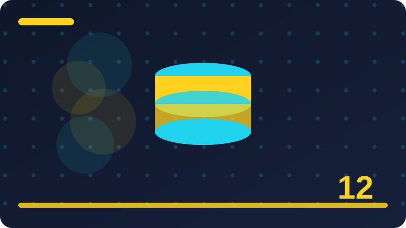

Chapter 12: Arrays: Indexed and Associative

Section 1: What an Array Stores
Pause here and make sure you can recognise what an array stores when you see it, even if you cannot yet recall every detail from memory. Recognition comes before recall, and recall comes before fluency, so be patient with yourself while learning what an array stores. Write code that checks your understanding of what an array stores, such as printing a result you can verify by hand before trusting it. Verification by hand is a simple habit that catches many errors before they grow into larger and harder problems. Think about who will read your code later, including your future self, and let that reader guide how you use what an array stores. Readable code using what an array stores is not slower code; it is code you can return to, debug, and improve without starting over. Before moving to the next section, summarise what an array stores in one sentence and keep that sentence beside you as you practise. In this chapter on indexed and associative arrays, what an array stores earns its own section because it answers a question you will meet in almost every real program.
This section explains what an array stores in plain words first, and only then shows how the idea looks in a short PHP example. Before you write any code, it helps to say in your own words what what an array stores is for and when you would reach for it. If you can explain what an array stores to a friend in two short sentences, you already understand most of what this section needs to teach. Beginners often rush past what an array stores, yet most early confusion comes from skipping this idea rather than from any real difficulty in it. The central idea is straightforward: what an array stores gives you a clear and repeatable way to handle one small part of a program. Think of what an array stores as one tool in a growing toolkit, modest on its own but powerful when combined with the tools you already know. Programmers return to what an array stores again and again because it solves a problem that appears in different shapes throughout a project. Naming what an array stores clearly is the first step toward using it deliberately instead of copying code you do not fully understand.
Here is how what an array stores works in practice: you write a short and precise instruction, PHP checks it, and then it runs step by step. A useful way to learn what an array stores is to start from the smallest example that runs and study each line before changing anything. When you practise what an array stores, try typing the example yourself rather than only reading it, because typing forces you to notice order and punctuation. The example in this section is deliberately short, since short examples are easier to test, easier to break on purpose, and easier to fix. Experienced programmers still make mistakes with what an array stores; the difference is that they test early and fix one small problem at a time.
<?php
$colours = ["red", "green", "blue"];
echo $colours[0];
echo count($colours);Check: In your own words, what does what an array stores mean in PHP, and how would you use it when storing a list of data?
Section 2: Creating an Indexed Array
In this chapter on indexed and associative arrays, creating an indexed array earns its own section because it answers a question you will meet in almost every real program. This section explains creating an indexed array in plain words first, and only then shows how the idea looks in a short PHP example. Before you write any code, it helps to say in your own words what creating an indexed array is for and when you would reach for it. If you can explain creating an indexed array to a friend in two short sentences, you already understand most of what this section needs to teach. Beginners often rush past creating an indexed array, yet most early confusion comes from skipping this idea rather than from any real difficulty in it. The central idea is straightforward: creating an indexed array gives you a clear and repeatable way to handle one small part of a program. Think of creating an indexed array as one tool in a growing toolkit, modest on its own but powerful when combined with the tools you already know. Programmers return to creating an indexed array again and again because it solves a problem that appears in different shapes throughout a project.
Naming creating an indexed array clearly is the first step toward using it deliberately instead of copying code you do not fully understand. Here is how creating an indexed array works in practice: you write a short and precise instruction, PHP checks it, and then it runs step by step. A useful way to learn creating an indexed array is to start from the smallest example that runs and study each line before changing anything. When you practise creating an indexed array, try typing the example yourself rather than only reading it, because typing forces you to notice order and punctuation. The example in this section is deliberately short, since short examples are easier to test, easier to break on purpose, and easier to fix. Trace the example by hand before you run it, predict the output, write your prediction down, and then compare it with the real result. A wrong prediction is not a failure; it shows you precisely which part of creating an indexed array you should re-read before moving on. As you work through creating an indexed array, keep asking what each part contributes, and what would happen if you removed or changed one line.
Good PHP code reads almost like a description of its own behaviour, and creating an indexed array should help your code read that way too. Notice the order in which things happen, because PHP does not guess your intention from the whole program at once. PHP follows instructions in sequence, and creating an indexed array fits into that sequence like one careful step in a recipe you can repeat. Consider what creating an indexed array should not be used for as well, because choosing the right tool matters as much as knowing how to use it.
<?php
$scores = [10, 20, 30];
$scores[] = 40;
echo $scores[3];Check: In your own words, what does creating an indexed array mean in PHP, and how would you use it when storing a list of data?
Section 3: Reading Values by Index
Programmers return to reading values by index again and again because it solves a problem that appears in different shapes throughout a project. Naming reading values by index clearly is the first step toward using it deliberately instead of copying code you do not fully understand. Here is how reading values by index works in practice: you write a short and precise instruction, PHP checks it, and then it runs step by step. A useful way to learn reading values by index is to start from the smallest example that runs and study each line before changing anything. When you practise reading values by index, try typing the example yourself rather than only reading it, because typing forces you to notice order and punctuation. The example in this section is deliberately short, since short examples are easier to test, easier to break on purpose, and easier to fix. Trace the example by hand before you run it, predict the output, write your prediction down, and then compare it with the real result. A wrong prediction is not a failure; it shows you precisely which part of reading values by index you should re-read before moving on.
As you work through reading values by index, keep asking what each part contributes, and what would happen if you removed or changed one line. Good PHP code reads almost like a description of its own behaviour, and reading values by index should help your code read that way too. Notice the order in which things happen, because PHP does not guess your intention from the whole program at once. PHP follows instructions in sequence, and reading values by index fits into that sequence like one careful step in a recipe you can repeat. Start small with reading values by index, change one detail at a time, and watch how the output changes in response to each change. Small experiments teach more than long programs copied from somewhere else that you cannot explain or repair when they break. If your program does not behave as expected with reading values by index, resist the urge to change many things at once and test again after each single change. A good habit while learning reading values by index is to print intermediate results, because seeing values at each stage makes invisible mistakes visible.
Do not worry if reading values by index feels awkward at first, since awkwardness is normal while a new idea is still unfamiliar and fades with practice. Experienced programmers still make mistakes with reading values by index; the difference is that they test early and fix one small problem at a time. The most common mistake with reading values by index is rushing, so check each line slowly and read any error message from the top. Another frequent pitfall is assuming PHP knows what you meant, when it only knows what you actually wrote in the code. Clarity today saves confusion later, so with reading values by index aim for code that a reader can follow without a long written explanation.
<?php
$person = ["name" => "Ada", "age" => 21];
echo $person["name"];Check: In your own words, what does reading values by index mean in PHP, and how would you use it when storing a list of data?
Section 4: Counting Elements in an Array
A wrong prediction is not a failure; it shows you precisely which part of counting elements in an array you should re-read before moving on. As you work through counting elements in an array, keep asking what each part contributes, and what would happen if you removed or changed one line. Good PHP code reads almost like a description of its own behaviour, and counting elements in an array should help your code read that way too. Notice the order in which things happen, because PHP does not guess your intention from the whole program at once. PHP follows instructions in sequence, and counting elements in an array fits into that sequence like one careful step in a recipe you can repeat. Start small with counting elements in an array, change one detail at a time, and watch how the output changes in response to each change. Small experiments teach more than long programs copied from somewhere else that you cannot explain or repair when they break. If your program does not behave as expected with counting elements in an array, resist the urge to change many things at once and test again after each single change.
A good habit while learning counting elements in an array is to print intermediate results, because seeing values at each stage makes invisible mistakes visible. Do not worry if counting elements in an array feels awkward at first, since awkwardness is normal while a new idea is still unfamiliar and fades with practice. Experienced programmers still make mistakes with counting elements in an array; the difference is that they test early and fix one small problem at a time. The most common mistake with counting elements in an array is rushing, so check each line slowly and read any error message from the top. Another frequent pitfall is assuming PHP knows what you meant, when it only knows what you actually wrote in the code. Watch out for details that look unimportant but are not, such as spelling, brackets, quotes, and the exact order of values. When counting elements in an array behaves unexpectedly, compare the code you actually typed with the code you intended to type, line by line. Keep your experiments with counting elements in an array small while you learn, because a tiny program you fully understand teaches more than a long one you cannot follow.
Ask yourself where counting elements in an array belongs in a larger program, and what problem it removes that you would otherwise have to solve by hand. Consider what counting elements in an array should not be used for as well, because choosing the right tool matters as much as knowing how to use it. Try a second example of your own after the one in this section, using different values so you test the idea rather than memorising one answer. Write code that checks your understanding of counting elements in an array, such as printing a result you can verify by hand before trusting it.
<?php
$fruit = ["apple" => 3, "banana" => 5];
$fruit["apple"] = 4;
echo $fruit["apple"];Check: In your own words, what does counting elements in an array mean in PHP, and how would you use it when storing a list of data?
Section 5: Adding Elements to the End
If your program does not behave as expected with adding elements to the end, resist the urge to change many things at once and test again after each single change. A good habit while learning adding elements to the end is to print intermediate results, because seeing values at each stage makes invisible mistakes visible. Do not worry if adding elements to the end feels awkward at first, since awkwardness is normal while a new idea is still unfamiliar and fades with practice. Experienced programmers still make mistakes with adding elements to the end; the difference is that they test early and fix one small problem at a time. The most common mistake with adding elements to the end is rushing, so check each line slowly and read any error message from the top. Another frequent pitfall is assuming PHP knows what you meant, when it only knows what you actually wrote in the code. Watch out for details that look unimportant but are not, such as spelling, brackets, quotes, and the exact order of values. When adding elements to the end behaves unexpectedly, compare the code you actually typed with the code you intended to type, line by line.
Keep your experiments with adding elements to the end small while you learn, because a tiny program you fully understand teaches more than a long one you cannot follow. Ask yourself where adding elements to the end belongs in a larger program, and what problem it removes that you would otherwise have to solve by hand. Consider what adding elements to the end should not be used for as well, because choosing the right tool matters as much as knowing how to use it. Try a second example of your own after the one in this section, using different values so you test the idea rather than memorising one answer. Explain the example aloud as if teaching it, since teaching exposes gaps in understanding faster than silent reading ever does. Look for adding elements to the end in code you read elsewhere, and notice how other programmers use it in contexts different from this section. Keep notes on adding elements to the end in your own words, including one example that worked and one mistake you made and fixed. Revisit adding elements to the end after a day or two and rewrite the example from memory, because recall practice builds stronger understanding than re-reading alone.
In a real project, adding elements to the end often appears alongside decisions about naming, clarity, and how easy the code will be to change later. Clarity today saves confusion later, so with adding elements to the end aim for code that a reader can follow without a long written explanation. Test edge cases for adding elements to the end, such as empty values, the first item, the last item, and values at the boundary of what you expect. Before you write any code, it helps to say in your own words what adding elements to the end is for and when you would reach for it.
<?php
$items = ["pen", "book", "ruler"];
foreach ($items as $item) {
echo $item . "\n";
}Check: In your own words, what does adding elements to the end mean in PHP, and how would you use it when storing a list of data?
Section 6: Changing a Value by Index
When changing a value by index behaves unexpectedly, compare the code you actually typed with the code you intended to type, line by line. Keep your experiments with changing a value by index small while you learn, because a tiny program you fully understand teaches more than a long one you cannot follow. Ask yourself where changing a value by index belongs in a larger program, and what problem it removes that you would otherwise have to solve by hand. Consider what changing a value by index should not be used for as well, because choosing the right tool matters as much as knowing how to use it. Try a second example of your own after the one in this section, using different values so you test the idea rather than memorising one answer. Explain the example aloud as if teaching it, since teaching exposes gaps in understanding faster than silent reading ever does. Look for changing a value by index in code you read elsewhere, and notice how other programmers use it in contexts different from this section. Keep notes on changing a value by index in your own words, including one example that worked and one mistake you made and fixed.
Revisit changing a value by index after a day or two and rewrite the example from memory, because recall practice builds stronger understanding than re-reading alone. In a real project, changing a value by index often appears alongside decisions about naming, clarity, and how easy the code will be to change later. Clarity today saves confusion later, so with changing a value by index aim for code that a reader can follow without a long written explanation. Test edge cases for changing a value by index, such as empty values, the first item, the last item, and values at the boundary of what you expect. Edge cases reveal whether you understand changing a value by index or have only learned its most comfortable and familiar case. When you combine changing a value by index with earlier ideas from this book, you can express programs that were awkward or impossible before. Every section in this chapter builds on the last, so changing a value by index is best learned as part of that sequence rather than in isolation. Pause here and make sure you can recognise changing a value by index when you see it, even if you cannot yet recall every detail from memory.
Recognition comes before recall, and recall comes before fluency, so be patient with yourself while learning changing a value by index. Write code that checks your understanding of changing a value by index, such as printing a result you can verify by hand before trusting it. Verification by hand is a simple habit that catches many errors before they grow into larger and harder problems. Here is how changing a value by index works in practice: you write a short and precise instruction, PHP checks it, and then it runs step by step.
<?php
$capitals = ["France" => "Paris", "Nigeria" => "Abuja"];
foreach ($capitals as $country => $city) {
echo $country . ": " . $city . "\n";
}Check: In your own words, what does changing a value by index mean in PHP, and how would you use it when storing a list of data?
Section 7: Removing Elements with unset
Keep notes on removing elements with unset in your own words, including one example that worked and one mistake you made and fixed. Revisit removing elements with unset after a day or two and rewrite the example from memory, because recall practice builds stronger understanding than re-reading alone. In a real project, removing elements with unset often appears alongside decisions about naming, clarity, and how easy the code will be to change later. Clarity today saves confusion later, so with removing elements with unset aim for code that a reader can follow without a long written explanation. Test edge cases for removing elements with unset, such as empty values, the first item, the last item, and values at the boundary of what you expect. Edge cases reveal whether you understand removing elements with unset or have only learned its most comfortable and familiar case. When you combine removing elements with unset with earlier ideas from this book, you can express programs that were awkward or impossible before. Every section in this chapter builds on the last, so removing elements with unset is best learned as part of that sequence rather than in isolation.
Pause here and make sure you can recognise removing elements with unset when you see it, even if you cannot yet recall every detail from memory. Recognition comes before recall, and recall comes before fluency, so be patient with yourself while learning removing elements with unset. Write code that checks your understanding of removing elements with unset, such as printing a result you can verify by hand before trusting it. Verification by hand is a simple habit that catches many errors before they grow into larger and harder problems. Think about who will read your code later, including your future self, and let that reader guide how you use removing elements with unset. Readable code using removing elements with unset is not slower code; it is code you can return to, debug, and improve without starting over. Before moving to the next section, summarise removing elements with unset in one sentence and keep that sentence beside you as you practise. In this chapter on indexed and associative arrays, removing elements with unset earns its own section because it answers a question you will meet in almost every real program.
This section explains removing elements with unset in plain words first, and only then shows how the idea looks in a short PHP example. Before you write any code, it helps to say in your own words what removing elements with unset is for and when you would reach for it. If you can explain removing elements with unset to a friend in two short sentences, you already understand most of what this section needs to teach. Beginners often rush past removing elements with unset, yet most early confusion comes from skipping this idea rather than from any real difficulty in it. Good PHP code reads almost like a description of its own behaviour, and removing elements with unset should help your code read that way too.
<?php
$list = ["a", "b", "c"];
unset($list[1]);
$list = array_values($list);
print_r($list);Check: In your own words, what does removing elements with unset mean in PHP, and how would you use it when storing a list of data?
Section 8: Looping Over Indexed Arrays with for
Every section in this chapter builds on the last, so looping over indexed arrays with for is best learned as part of that sequence rather than in isolation. Pause here and make sure you can recognise looping over indexed arrays with for when you see it, even if you cannot yet recall every detail from memory. Recognition comes before recall, and recall comes before fluency, so be patient with yourself while learning looping over indexed arrays with for. Write code that checks your understanding of looping over indexed arrays with for, such as printing a result you can verify by hand before trusting it. Verification by hand is a simple habit that catches many errors before they grow into larger and harder problems. Think about who will read your code later, including your future self, and let that reader guide how you use looping over indexed arrays with for. Readable code using looping over indexed arrays with for is not slower code; it is code you can return to, debug, and improve without starting over. Before moving to the next section, summarise looping over indexed arrays with for in one sentence and keep that sentence beside you as you practise.
In this chapter on indexed and associative arrays, looping over indexed arrays with for earns its own section because it answers a question you will meet in almost every real program. This section explains looping over indexed arrays with for in plain words first, and only then shows how the idea looks in a short PHP example. Before you write any code, it helps to say in your own words what looping over indexed arrays with for is for and when you would reach for it. If you can explain looping over indexed arrays with for to a friend in two short sentences, you already understand most of what this section needs to teach. Beginners often rush past looping over indexed arrays with for, yet most early confusion comes from skipping this idea rather than from any real difficulty in it. The central idea is straightforward: looping over indexed arrays with for gives you a clear and repeatable way to handle one small part of a program. Think of looping over indexed arrays with for as one tool in a growing toolkit, modest on its own but powerful when combined with the tools you already know. Programmers return to looping over indexed arrays with for again and again because it solves a problem that appears in different shapes throughout a project.
Naming looping over indexed arrays with for clearly is the first step toward using it deliberately instead of copying code you do not fully understand. Here is how looping over indexed arrays with for works in practice: you write a short and precise instruction, PHP checks it, and then it runs step by step. Do not worry if looping over indexed arrays with for feels awkward at first, since awkwardness is normal while a new idea is still unfamiliar and fades with practice.
<?php
$prices = ["bread" => 500, "milk" => 800];
if (isset($prices["milk"])) {
echo $prices["milk"];
}Check: In your own words, what does looping over indexed arrays with for mean in PHP, and how would you use it when storing a list of data?
Section 9: Looping with foreach and Values
Before moving to the next section, summarise looping with foreach and values in one sentence and keep that sentence beside you as you practise. In this chapter on indexed and associative arrays, looping with foreach and values earns its own section because it answers a question you will meet in almost every real program. This section explains looping with foreach and values in plain words first, and only then shows how the idea looks in a short PHP example. Before you write any code, it helps to say in your own words what looping with foreach and values is for and when you would reach for it. If you can explain looping with foreach and values to a friend in two short sentences, you already understand most of what this section needs to teach. Beginners often rush past looping with foreach and values, yet most early confusion comes from skipping this idea rather than from any real difficulty in it. The central idea is straightforward: looping with foreach and values gives you a clear and repeatable way to handle one small part of a program. Think of looping with foreach and values as one tool in a growing toolkit, modest on its own but powerful when combined with the tools you already know.
Programmers return to looping with foreach and values again and again because it solves a problem that appears in different shapes throughout a project. Naming looping with foreach and values clearly is the first step toward using it deliberately instead of copying code you do not fully understand. Here is how looping with foreach and values works in practice: you write a short and precise instruction, PHP checks it, and then it runs step by step. A useful way to learn looping with foreach and values is to start from the smallest example that runs and study each line before changing anything. When you practise looping with foreach and values, try typing the example yourself rather than only reading it, because typing forces you to notice order and punctuation. The example in this section is deliberately short, since short examples are easier to test, easier to break on purpose, and easier to fix. Trace the example by hand before you run it, predict the output, write your prediction down, and then compare it with the real result. A wrong prediction is not a failure; it shows you precisely which part of looping with foreach and values you should re-read before moving on.
As you work through looping with foreach and values, keep asking what each part contributes, and what would happen if you removed or changed one line. Good PHP code reads almost like a description of its own behaviour, and looping with foreach and values should help your code read that way too. Notice the order in which things happen, because PHP does not guess your intention from the whole program at once. Ask yourself where looping with foreach and values belongs in a larger program, and what problem it removes that you would otherwise have to solve by hand.
<?php
$names = ["Kel", "Ada", "Tobi"];
sort($names);
print_r($names);Check: In your own words, what does looping with foreach and values mean in PHP, and how would you use it when storing a list of data?
Section 10: Looping with foreach Keys and Values
Think of looping with foreach keys and values as one tool in a growing toolkit, modest on its own but powerful when combined with the tools you already know. Programmers return to looping with foreach keys and values again and again because it solves a problem that appears in different shapes throughout a project. Naming looping with foreach keys and values clearly is the first step toward using it deliberately instead of copying code you do not fully understand. Here is how looping with foreach keys and values works in practice: you write a short and precise instruction, PHP checks it, and then it runs step by step. A useful way to learn looping with foreach keys and values is to start from the smallest example that runs and study each line before changing anything. When you practise looping with foreach keys and values, try typing the example yourself rather than only reading it, because typing forces you to notice order and punctuation. The example in this section is deliberately short, since short examples are easier to test, easier to break on purpose, and easier to fix. Trace the example by hand before you run it, predict the output, write your prediction down, and then compare it with the real result.
A wrong prediction is not a failure; it shows you precisely which part of looping with foreach keys and values you should re-read before moving on. As you work through looping with foreach keys and values, keep asking what each part contributes, and what would happen if you removed or changed one line. Good PHP code reads almost like a description of its own behaviour, and looping with foreach keys and values should help your code read that way too. Notice the order in which things happen, because PHP does not guess your intention from the whole program at once. PHP follows instructions in sequence, and looping with foreach keys and values fits into that sequence like one careful step in a recipe you can repeat. Start small with looping with foreach keys and values, change one detail at a time, and watch how the output changes in response to each change. Small experiments teach more than long programs copied from somewhere else that you cannot explain or repair when they break. If your program does not behave as expected with looping with foreach keys and values, resist the urge to change many things at once and test again after each single change.
A good habit while learning looping with foreach keys and values is to print intermediate results, because seeing values at each stage makes invisible mistakes visible. Do not worry if looping with foreach keys and values feels awkward at first, since awkwardness is normal while a new idea is still unfamiliar and fades with practice. In a real project, looping with foreach keys and values often appears alongside decisions about naming, clarity, and how easy the code will be to change later.
<?php
$marks = ["Ada" => 90, "Kel" => 75];
asort($marks);
print_r($marks);Check: In your own words, what does looping with foreach keys and values mean in PHP, and how would you use it when storing a list of data?
Section 11: What Happens with Missing Indexes
Trace the example by hand before you run it, predict the output, write your prediction down, and then compare it with the real result. A wrong prediction is not a failure; it shows you precisely which part of what happens with missing indexes you should re-read before moving on. As you work through what happens with missing indexes, keep asking what each part contributes, and what would happen if you removed or changed one line. Good PHP code reads almost like a description of its own behaviour, and what happens with missing indexes should help your code read that way too. Notice the order in which things happen, because PHP does not guess your intention from the whole program at once. PHP follows instructions in sequence, and what happens with missing indexes fits into that sequence like one careful step in a recipe you can repeat. Start small with what happens with missing indexes, change one detail at a time, and watch how the output changes in response to each change. Small experiments teach more than long programs copied from somewhere else that you cannot explain or repair when they break.
If your program does not behave as expected with what happens with missing indexes, resist the urge to change many things at once and test again after each single change. A good habit while learning what happens with missing indexes is to print intermediate results, because seeing values at each stage makes invisible mistakes visible. Do not worry if what happens with missing indexes feels awkward at first, since awkwardness is normal while a new idea is still unfamiliar and fades with practice. Experienced programmers still make mistakes with what happens with missing indexes; the difference is that they test early and fix one small problem at a time. The most common mistake with what happens with missing indexes is rushing, so check each line slowly and read any error message from the top. Another frequent pitfall is assuming PHP knows what you meant, when it only knows what you actually wrote in the code. Watch out for details that look unimportant but are not, such as spelling, brackets, quotes, and the exact order of values. When what happens with missing indexes behaves unexpectedly, compare the code you actually typed with the code you intended to type, line by line.
Keep your experiments with what happens with missing indexes small while you learn, because a tiny program you fully understand teaches more than a long one you cannot follow. Ask yourself where what happens with missing indexes belongs in a larger program, and what problem it removes that you would otherwise have to solve by hand. Consider what what happens with missing indexes should not be used for as well, because choosing the right tool matters as much as knowing how to use it. Recognition comes before recall, and recall comes before fluency, so be patient with yourself while learning what happens with missing indexes.
<?php
$colours = ["red", "green", "blue"];
echo $colours[0];
echo count($colours);Check: In your own words, what does what happens with missing indexes mean in PHP, and how would you use it when storing a list of data?
Section 12: Reindexing After Removal
Small experiments teach more than long programs copied from somewhere else that you cannot explain or repair when they break. If your program does not behave as expected with reindexing after removal, resist the urge to change many things at once and test again after each single change. A good habit while learning reindexing after removal is to print intermediate results, because seeing values at each stage makes invisible mistakes visible. Do not worry if reindexing after removal feels awkward at first, since awkwardness is normal while a new idea is still unfamiliar and fades with practice. Experienced programmers still make mistakes with reindexing after removal; the difference is that they test early and fix one small problem at a time. The most common mistake with reindexing after removal is rushing, so check each line slowly and read any error message from the top. Another frequent pitfall is assuming PHP knows what you meant, when it only knows what you actually wrote in the code. Watch out for details that look unimportant but are not, such as spelling, brackets, quotes, and the exact order of values.
When reindexing after removal behaves unexpectedly, compare the code you actually typed with the code you intended to type, line by line. Keep your experiments with reindexing after removal small while you learn, because a tiny program you fully understand teaches more than a long one you cannot follow. Ask yourself where reindexing after removal belongs in a larger program, and what problem it removes that you would otherwise have to solve by hand. Consider what reindexing after removal should not be used for as well, because choosing the right tool matters as much as knowing how to use it. Try a second example of your own after the one in this section, using different values so you test the idea rather than memorising one answer. Explain the example aloud as if teaching it, since teaching exposes gaps in understanding faster than silent reading ever does. Look for reindexing after removal in code you read elsewhere, and notice how other programmers use it in contexts different from this section. Keep notes on reindexing after removal in your own words, including one example that worked and one mistake you made and fixed.
Revisit reindexing after removal after a day or two and rewrite the example from memory, because recall practice builds stronger understanding than re-reading alone. In a real project, reindexing after removal often appears alongside decisions about naming, clarity, and how easy the code will be to change later. Clarity today saves confusion later, so with reindexing after removal aim for code that a reader can follow without a long written explanation. Test edge cases for reindexing after removal, such as empty values, the first item, the last item, and values at the boundary of what you expect. This section explains reindexing after removal in plain words first, and only then shows how the idea looks in a short PHP example.
<?php
$scores = [10, 20, 30];
$scores[] = 40;
echo $scores[3];Check: In your own words, what does reindexing after removal mean in PHP, and how would you use it when storing a list of data?
Section 13: Creating an Associative Array
Watch out for details that look unimportant but are not, such as spelling, brackets, quotes, and the exact order of values. When creating an associative array behaves unexpectedly, compare the code you actually typed with the code you intended to type, line by line. Keep your experiments with creating an associative array small while you learn, because a tiny program you fully understand teaches more than a long one you cannot follow. Ask yourself where creating an associative array belongs in a larger program, and what problem it removes that you would otherwise have to solve by hand. Consider what creating an associative array should not be used for as well, because choosing the right tool matters as much as knowing how to use it. Try a second example of your own after the one in this section, using different values so you test the idea rather than memorising one answer. Explain the example aloud as if teaching it, since teaching exposes gaps in understanding faster than silent reading ever does. Look for creating an associative array in code you read elsewhere, and notice how other programmers use it in contexts different from this section.
Keep notes on creating an associative array in your own words, including one example that worked and one mistake you made and fixed. Revisit creating an associative array after a day or two and rewrite the example from memory, because recall practice builds stronger understanding than re-reading alone. In a real project, creating an associative array often appears alongside decisions about naming, clarity, and how easy the code will be to change later. Clarity today saves confusion later, so with creating an associative array aim for code that a reader can follow without a long written explanation. Test edge cases for creating an associative array, such as empty values, the first item, the last item, and values at the boundary of what you expect. Edge cases reveal whether you understand creating an associative array or have only learned its most comfortable and familiar case. When you combine creating an associative array with earlier ideas from this book, you can express programs that were awkward or impossible before. Every section in this chapter builds on the last, so creating an associative array is best learned as part of that sequence rather than in isolation.
Pause here and make sure you can recognise creating an associative array when you see it, even if you cannot yet recall every detail from memory. Recognition comes before recall, and recall comes before fluency, so be patient with yourself while learning creating an associative array. Write code that checks your understanding of creating an associative array, such as printing a result you can verify by hand before trusting it. Verification by hand is a simple habit that catches many errors before they grow into larger and harder problems. Naming creating an associative array clearly is the first step toward using it deliberately instead of copying code you do not fully understand.
<?php
$person = ["name" => "Ada", "age" => 21];
echo $person["name"];Check: In your own words, what does creating an associative array mean in PHP, and how would you use it when storing a list of data?
Section 14: Choosing Meaningful String Keys
Look for choosing meaningful string keys in code you read elsewhere, and notice how other programmers use it in contexts different from this section. Keep notes on choosing meaningful string keys in your own words, including one example that worked and one mistake you made and fixed. Revisit choosing meaningful string keys after a day or two and rewrite the example from memory, because recall practice builds stronger understanding than re-reading alone. In a real project, choosing meaningful string keys often appears alongside decisions about naming, clarity, and how easy the code will be to change later. Clarity today saves confusion later, so with choosing meaningful string keys aim for code that a reader can follow without a long written explanation. Test edge cases for choosing meaningful string keys, such as empty values, the first item, the last item, and values at the boundary of what you expect. Edge cases reveal whether you understand choosing meaningful string keys or have only learned its most comfortable and familiar case. When you combine choosing meaningful string keys with earlier ideas from this book, you can express programs that were awkward or impossible before.
Every section in this chapter builds on the last, so choosing meaningful string keys is best learned as part of that sequence rather than in isolation. Pause here and make sure you can recognise choosing meaningful string keys when you see it, even if you cannot yet recall every detail from memory. Recognition comes before recall, and recall comes before fluency, so be patient with yourself while learning choosing meaningful string keys. Write code that checks your understanding of choosing meaningful string keys, such as printing a result you can verify by hand before trusting it. Verification by hand is a simple habit that catches many errors before they grow into larger and harder problems. Think about who will read your code later, including your future self, and let that reader guide how you use choosing meaningful string keys. Readable code using choosing meaningful string keys is not slower code; it is code you can return to, debug, and improve without starting over. Before moving to the next section, summarise choosing meaningful string keys in one sentence and keep that sentence beside you as you practise.
In this chapter on indexed and associative arrays, choosing meaningful string keys earns its own section because it answers a question you will meet in almost every real program. This section explains choosing meaningful string keys in plain words first, and only then shows how the idea looks in a short PHP example. Before you write any code, it helps to say in your own words what choosing meaningful string keys is for and when you would reach for it. If you can explain choosing meaningful string keys to a friend in two short sentences, you already understand most of what this section needs to teach. As you work through choosing meaningful string keys, keep asking what each part contributes, and what would happen if you removed or changed one line.
<?php
$fruit = ["apple" => 3, "banana" => 5];
$fruit["apple"] = 4;
echo $fruit["apple"];Check: In your own words, what does choosing meaningful string keys mean in PHP, and how would you use it when storing a list of data?
Section 15: Reading Values by Key
When you combine reading values by key with earlier ideas from this book, you can express programs that were awkward or impossible before. Every section in this chapter builds on the last, so reading values by key is best learned as part of that sequence rather than in isolation. Pause here and make sure you can recognise reading values by key when you see it, even if you cannot yet recall every detail from memory. Recognition comes before recall, and recall comes before fluency, so be patient with yourself while learning reading values by key. Write code that checks your understanding of reading values by key, such as printing a result you can verify by hand before trusting it. Verification by hand is a simple habit that catches many errors before they grow into larger and harder problems. Think about who will read your code later, including your future self, and let that reader guide how you use reading values by key. Readable code using reading values by key is not slower code; it is code you can return to, debug, and improve without starting over.
Before moving to the next section, summarise reading values by key in one sentence and keep that sentence beside you as you practise. In this chapter on indexed and associative arrays, reading values by key earns its own section because it answers a question you will meet in almost every real program. This section explains reading values by key in plain words first, and only then shows how the idea looks in a short PHP example. Before you write any code, it helps to say in your own words what reading values by key is for and when you would reach for it. If you can explain reading values by key to a friend in two short sentences, you already understand most of what this section needs to teach. Beginners often rush past reading values by key, yet most early confusion comes from skipping this idea rather than from any real difficulty in it. The central idea is straightforward: reading values by key gives you a clear and repeatable way to handle one small part of a program. Think of reading values by key as one tool in a growing toolkit, modest on its own but powerful when combined with the tools you already know.
Programmers return to reading values by key again and again because it solves a problem that appears in different shapes throughout a project. Naming reading values by key clearly is the first step toward using it deliberately instead of copying code you do not fully understand. Here is how reading values by key works in practice: you write a short and precise instruction, PHP checks it, and then it runs step by step. A useful way to learn reading values by key is to start from the smallest example that runs and study each line before changing anything. A good habit while learning reading values by key is to print intermediate results, because seeing values at each stage makes invisible mistakes visible.
<?php
$items = ["pen", "book", "ruler"];
foreach ($items as $item) {
echo $item . "\n";
}Check: In your own words, what does reading values by key mean in PHP, and how would you use it when storing a list of data?
Section 16: Adding and Updating Keyed Values
Readable code using adding and updating keyed values is not slower code; it is code you can return to, debug, and improve without starting over. Before moving to the next section, summarise adding and updating keyed values in one sentence and keep that sentence beside you as you practise. In this chapter on indexed and associative arrays, adding and updating keyed values earns its own section because it answers a question you will meet in almost every real program. This section explains adding and updating keyed values in plain words first, and only then shows how the idea looks in a short PHP example. Before you write any code, it helps to say in your own words what adding and updating keyed values is for and when you would reach for it. If you can explain adding and updating keyed values to a friend in two short sentences, you already understand most of what this section needs to teach. Beginners often rush past adding and updating keyed values, yet most early confusion comes from skipping this idea rather than from any real difficulty in it. The central idea is straightforward: adding and updating keyed values gives you a clear and repeatable way to handle one small part of a program.
Think of adding and updating keyed values as one tool in a growing toolkit, modest on its own but powerful when combined with the tools you already know. Programmers return to adding and updating keyed values again and again because it solves a problem that appears in different shapes throughout a project. Naming adding and updating keyed values clearly is the first step toward using it deliberately instead of copying code you do not fully understand. Here is how adding and updating keyed values works in practice: you write a short and precise instruction, PHP checks it, and then it runs step by step. A useful way to learn adding and updating keyed values is to start from the smallest example that runs and study each line before changing anything. When you practise adding and updating keyed values, try typing the example yourself rather than only reading it, because typing forces you to notice order and punctuation. The example in this section is deliberately short, since short examples are easier to test, easier to break on purpose, and easier to fix. Trace the example by hand before you run it, predict the output, write your prediction down, and then compare it with the real result.
A wrong prediction is not a failure; it shows you precisely which part of adding and updating keyed values you should re-read before moving on. As you work through adding and updating keyed values, keep asking what each part contributes, and what would happen if you removed or changed one line. Keep your experiments with adding and updating keyed values small while you learn, because a tiny program you fully understand teaches more than a long one you cannot follow.
<?php
$capitals = ["France" => "Paris", "Nigeria" => "Abuja"];
foreach ($capitals as $country => $city) {
echo $country . ": " . $city . "\n";
}Check: In your own words, what does adding and updating keyed values mean in PHP, and how would you use it when storing a list of data?
Section 17: Checking Whether a Key Exists
The central idea is straightforward: checking whether a key exists gives you a clear and repeatable way to handle one small part of a program. Think of checking whether a key exists as one tool in a growing toolkit, modest on its own but powerful when combined with the tools you already know. Programmers return to checking whether a key exists again and again because it solves a problem that appears in different shapes throughout a project. Naming checking whether a key exists clearly is the first step toward using it deliberately instead of copying code you do not fully understand. Here is how checking whether a key exists works in practice: you write a short and precise instruction, PHP checks it, and then it runs step by step. A useful way to learn checking whether a key exists is to start from the smallest example that runs and study each line before changing anything. When you practise checking whether a key exists, try typing the example yourself rather than only reading it, because typing forces you to notice order and punctuation. The example in this section is deliberately short, since short examples are easier to test, easier to break on purpose, and easier to fix.
Trace the example by hand before you run it, predict the output, write your prediction down, and then compare it with the real result. A wrong prediction is not a failure; it shows you precisely which part of checking whether a key exists you should re-read before moving on. As you work through checking whether a key exists, keep asking what each part contributes, and what would happen if you removed or changed one line. Good PHP code reads almost like a description of its own behaviour, and checking whether a key exists should help your code read that way too. Notice the order in which things happen, because PHP does not guess your intention from the whole program at once. PHP follows instructions in sequence, and checking whether a key exists fits into that sequence like one careful step in a recipe you can repeat. Start small with checking whether a key exists, change one detail at a time, and watch how the output changes in response to each change. Small experiments teach more than long programs copied from somewhere else that you cannot explain or repair when they break.
If your program does not behave as expected with checking whether a key exists, resist the urge to change many things at once and test again after each single change. A good habit while learning checking whether a key exists is to print intermediate results, because seeing values at each stage makes invisible mistakes visible. Do not worry if checking whether a key exists feels awkward at first, since awkwardness is normal while a new idea is still unfamiliar and fades with practice. Revisit checking whether a key exists after a day or two and rewrite the example from memory, because recall practice builds stronger understanding than re-reading alone.
<?php
$list = ["a", "b", "c"];
unset($list[1]);
$list = array_values($list);
print_r($list);Check: In your own words, what does checking whether a key exists mean in PHP, and how would you use it when storing a list of data?
Section 18: Checking Whether a Value Exists
The example in this section is deliberately short, since short examples are easier to test, easier to break on purpose, and easier to fix. Trace the example by hand before you run it, predict the output, write your prediction down, and then compare it with the real result. A wrong prediction is not a failure; it shows you precisely which part of checking whether a value exists you should re-read before moving on. As you work through checking whether a value exists, keep asking what each part contributes, and what would happen if you removed or changed one line. Good PHP code reads almost like a description of its own behaviour, and checking whether a value exists should help your code read that way too. Notice the order in which things happen, because PHP does not guess your intention from the whole program at once. PHP follows instructions in sequence, and checking whether a value exists fits into that sequence like one careful step in a recipe you can repeat. Start small with checking whether a value exists, change one detail at a time, and watch how the output changes in response to each change.
Small experiments teach more than long programs copied from somewhere else that you cannot explain or repair when they break. If your program does not behave as expected with checking whether a value exists, resist the urge to change many things at once and test again after each single change. A good habit while learning checking whether a value exists is to print intermediate results, because seeing values at each stage makes invisible mistakes visible. Do not worry if checking whether a value exists feels awkward at first, since awkwardness is normal while a new idea is still unfamiliar and fades with practice. Experienced programmers still make mistakes with checking whether a value exists; the difference is that they test early and fix one small problem at a time. The most common mistake with checking whether a value exists is rushing, so check each line slowly and read any error message from the top. Another frequent pitfall is assuming PHP knows what you meant, when it only knows what you actually wrote in the code. Watch out for details that look unimportant but are not, such as spelling, brackets, quotes, and the exact order of values.
When checking whether a value exists behaves unexpectedly, compare the code you actually typed with the code you intended to type, line by line. Keep your experiments with checking whether a value exists small while you learn, because a tiny program you fully understand teaches more than a long one you cannot follow. Ask yourself where checking whether a value exists belongs in a larger program, and what problem it removes that you would otherwise have to solve by hand. Pause here and make sure you can recognise checking whether a value exists when you see it, even if you cannot yet recall every detail from memory.
<?php
$prices = ["bread" => 500, "milk" => 800];
if (isset($prices["milk"])) {
echo $prices["milk"];
}Check: In your own words, what does checking whether a value exists mean in PHP, and how would you use it when storing a list of data?
Section 19: Removing Keyed Entries
Start small with removing keyed entries, change one detail at a time, and watch how the output changes in response to each change. Small experiments teach more than long programs copied from somewhere else that you cannot explain or repair when they break. If your program does not behave as expected with removing keyed entries, resist the urge to change many things at once and test again after each single change. A good habit while learning removing keyed entries is to print intermediate results, because seeing values at each stage makes invisible mistakes visible. Do not worry if removing keyed entries feels awkward at first, since awkwardness is normal while a new idea is still unfamiliar and fades with practice. Experienced programmers still make mistakes with removing keyed entries; the difference is that they test early and fix one small problem at a time. The most common mistake with removing keyed entries is rushing, so check each line slowly and read any error message from the top. Another frequent pitfall is assuming PHP knows what you meant, when it only knows what you actually wrote in the code.
Watch out for details that look unimportant but are not, such as spelling, brackets, quotes, and the exact order of values. When removing keyed entries behaves unexpectedly, compare the code you actually typed with the code you intended to type, line by line. Keep your experiments with removing keyed entries small while you learn, because a tiny program you fully understand teaches more than a long one you cannot follow. Ask yourself where removing keyed entries belongs in a larger program, and what problem it removes that you would otherwise have to solve by hand. Consider what removing keyed entries should not be used for as well, because choosing the right tool matters as much as knowing how to use it. Try a second example of your own after the one in this section, using different values so you test the idea rather than memorising one answer. Explain the example aloud as if teaching it, since teaching exposes gaps in understanding faster than silent reading ever does. Look for removing keyed entries in code you read elsewhere, and notice how other programmers use it in contexts different from this section.
Keep notes on removing keyed entries in your own words, including one example that worked and one mistake you made and fixed. Revisit removing keyed entries after a day or two and rewrite the example from memory, because recall practice builds stronger understanding than re-reading alone. In a real project, removing keyed entries often appears alongside decisions about naming, clarity, and how easy the code will be to change later. Clarity today saves confusion later, so with removing keyed entries aim for code that a reader can follow without a long written explanation. In this chapter on indexed and associative arrays, removing keyed entries earns its own section because it answers a question you will meet in almost every real program.
<?php
$names = ["Kel", "Ada", "Tobi"];
sort($names);
print_r($names);Check: In your own words, what does removing keyed entries mean in PHP, and how would you use it when storing a list of data?
Section 20: Counting Associative Entries
Another frequent pitfall is assuming PHP knows what you meant, when it only knows what you actually wrote in the code. Watch out for details that look unimportant but are not, such as spelling, brackets, quotes, and the exact order of values. When counting associative entries behaves unexpectedly, compare the code you actually typed with the code you intended to type, line by line. Keep your experiments with counting associative entries small while you learn, because a tiny program you fully understand teaches more than a long one you cannot follow. Ask yourself where counting associative entries belongs in a larger program, and what problem it removes that you would otherwise have to solve by hand. Consider what counting associative entries should not be used for as well, because choosing the right tool matters as much as knowing how to use it. Try a second example of your own after the one in this section, using different values so you test the idea rather than memorising one answer. Explain the example aloud as if teaching it, since teaching exposes gaps in understanding faster than silent reading ever does.
Look for counting associative entries in code you read elsewhere, and notice how other programmers use it in contexts different from this section. Keep notes on counting associative entries in your own words, including one example that worked and one mistake you made and fixed. Revisit counting associative entries after a day or two and rewrite the example from memory, because recall practice builds stronger understanding than re-reading alone. In a real project, counting associative entries often appears alongside decisions about naming, clarity, and how easy the code will be to change later. Clarity today saves confusion later, so with counting associative entries aim for code that a reader can follow without a long written explanation. Test edge cases for counting associative entries, such as empty values, the first item, the last item, and values at the boundary of what you expect. Edge cases reveal whether you understand counting associative entries or have only learned its most comfortable and familiar case. When you combine counting associative entries with earlier ideas from this book, you can express programs that were awkward or impossible before.
Every section in this chapter builds on the last, so counting associative entries is best learned as part of that sequence rather than in isolation. Pause here and make sure you can recognise counting associative entries when you see it, even if you cannot yet recall every detail from memory. Recognition comes before recall, and recall comes before fluency, so be patient with yourself while learning counting associative entries. Write code that checks your understanding of counting associative entries, such as printing a result you can verify by hand before trusting it. Verification by hand is a simple habit that catches many errors before they grow into larger and harder problems. Programmers return to counting associative entries again and again because it solves a problem that appears in different shapes throughout a project.
<?php
$marks = ["Ada" => 90, "Kel" => 75];
asort($marks);
print_r($marks);Check: In your own words, what does counting associative entries mean in PHP, and how would you use it when storing a list of data?
Section 21: Nested Values Inside Associative Arrays
Explain the example aloud as if teaching it, since teaching exposes gaps in understanding faster than silent reading ever does. Look for nested values inside associative arrays in code you read elsewhere, and notice how other programmers use it in contexts different from this section. Keep notes on nested values inside associative arrays in your own words, including one example that worked and one mistake you made and fixed. Revisit nested values inside associative arrays after a day or two and rewrite the example from memory, because recall practice builds stronger understanding than re-reading alone. In a real project, nested values inside associative arrays often appears alongside decisions about naming, clarity, and how easy the code will be to change later. Clarity today saves confusion later, so with nested values inside associative arrays aim for code that a reader can follow without a long written explanation. Test edge cases for nested values inside associative arrays, such as empty values, the first item, the last item, and values at the boundary of what you expect. Edge cases reveal whether you understand nested values inside associative arrays or have only learned its most comfortable and familiar case.
When you combine nested values inside associative arrays with earlier ideas from this book, you can express programs that were awkward or impossible before. Every section in this chapter builds on the last, so nested values inside associative arrays is best learned as part of that sequence rather than in isolation. Pause here and make sure you can recognise nested values inside associative arrays when you see it, even if you cannot yet recall every detail from memory. Recognition comes before recall, and recall comes before fluency, so be patient with yourself while learning nested values inside associative arrays. Write code that checks your understanding of nested values inside associative arrays, such as printing a result you can verify by hand before trusting it. Verification by hand is a simple habit that catches many errors before they grow into larger and harder problems. Think about who will read your code later, including your future self, and let that reader guide how you use nested values inside associative arrays. Readable code using nested values inside associative arrays is not slower code; it is code you can return to, debug, and improve without starting over.
Before moving to the next section, summarise nested values inside associative arrays in one sentence and keep that sentence beside you as you practise. In this chapter on indexed and associative arrays, nested values inside associative arrays earns its own section because it answers a question you will meet in almost every real program. This section explains nested values inside associative arrays in plain words first, and only then shows how the idea looks in a short PHP example. A wrong prediction is not a failure; it shows you precisely which part of nested values inside associative arrays you should re-read before moving on.
<?php
$colours = ["red", "green", "blue"];
echo $colours[0];
echo count($colours);Check: In your own words, what does nested values inside associative arrays mean in PHP, and how would you use it when storing a list of data?
Section 22: Arrays of Records
Edge cases reveal whether you understand arrays of records or have only learned its most comfortable and familiar case. When you combine arrays of records with earlier ideas from this book, you can express programs that were awkward or impossible before. Every section in this chapter builds on the last, so arrays of records is best learned as part of that sequence rather than in isolation. Pause here and make sure you can recognise arrays of records when you see it, even if you cannot yet recall every detail from memory. Recognition comes before recall, and recall comes before fluency, so be patient with yourself while learning arrays of records. Write code that checks your understanding of arrays of records, such as printing a result you can verify by hand before trusting it. Verification by hand is a simple habit that catches many errors before they grow into larger and harder problems. Think about who will read your code later, including your future self, and let that reader guide how you use arrays of records.
Readable code using arrays of records is not slower code; it is code you can return to, debug, and improve without starting over. Before moving to the next section, summarise arrays of records in one sentence and keep that sentence beside you as you practise. In this chapter on indexed and associative arrays, arrays of records earns its own section because it answers a question you will meet in almost every real program. This section explains arrays of records in plain words first, and only then shows how the idea looks in a short PHP example. Before you write any code, it helps to say in your own words what arrays of records is for and when you would reach for it. If you can explain arrays of records to a friend in two short sentences, you already understand most of what this section needs to teach. Beginners often rush past arrays of records, yet most early confusion comes from skipping this idea rather than from any real difficulty in it. The central idea is straightforward: arrays of records gives you a clear and repeatable way to handle one small part of a program.
Think of arrays of records as one tool in a growing toolkit, modest on its own but powerful when combined with the tools you already know. Programmers return to arrays of records again and again because it solves a problem that appears in different shapes throughout a project. Naming arrays of records clearly is the first step toward using it deliberately instead of copying code you do not fully understand. Here is how arrays of records works in practice: you write a short and precise instruction, PHP checks it, and then it runs step by step. If your program does not behave as expected with arrays of records, resist the urge to change many things at once and test again after each single change.
<?php
$scores = [10, 20, 30];
$scores[] = 40;
echo $scores[3];Check: In your own words, what does arrays of records mean in PHP, and how would you use it when storing a list of data?
Section 23: Comparing Indexed and Associative Arrays
Think about who will read your code later, including your future self, and let that reader guide how you use comparing indexed and associative arrays. Readable code using comparing indexed and associative arrays is not slower code; it is code you can return to, debug, and improve without starting over. Before moving to the next section, summarise comparing indexed and associative arrays in one sentence and keep that sentence beside you as you practise. In this chapter on indexed and associative arrays, comparing indexed and associative arrays earns its own section because it answers a question you will meet in almost every real program. This section explains comparing indexed and associative arrays in plain words first, and only then shows how the idea looks in a short PHP example. Before you write any code, it helps to say in your own words what comparing indexed and associative arrays is for and when you would reach for it. If you can explain comparing indexed and associative arrays to a friend in two short sentences, you already understand most of what this section needs to teach. Beginners often rush past comparing indexed and associative arrays, yet most early confusion comes from skipping this idea rather than from any real difficulty in it.
The central idea is straightforward: comparing indexed and associative arrays gives you a clear and repeatable way to handle one small part of a program. Think of comparing indexed and associative arrays as one tool in a growing toolkit, modest on its own but powerful when combined with the tools you already know. Programmers return to comparing indexed and associative arrays again and again because it solves a problem that appears in different shapes throughout a project. Naming comparing indexed and associative arrays clearly is the first step toward using it deliberately instead of copying code you do not fully understand. Here is how comparing indexed and associative arrays works in practice: you write a short and precise instruction, PHP checks it, and then it runs step by step. A useful way to learn comparing indexed and associative arrays is to start from the smallest example that runs and study each line before changing anything. When you practise comparing indexed and associative arrays, try typing the example yourself rather than only reading it, because typing forces you to notice order and punctuation. The example in this section is deliberately short, since short examples are easier to test, easier to break on purpose, and easier to fix.
Trace the example by hand before you run it, predict the output, write your prediction down, and then compare it with the real result. A wrong prediction is not a failure; it shows you precisely which part of comparing indexed and associative arrays you should re-read before moving on. As you work through comparing indexed and associative arrays, keep asking what each part contributes, and what would happen if you removed or changed one line. When comparing indexed and associative arrays behaves unexpectedly, compare the code you actually typed with the code you intended to type, line by line.
<?php
$person = ["name" => "Ada", "age" => 21];
echo $person["name"];Check: In your own words, what does comparing indexed and associative arrays mean in PHP, and how would you use it when storing a list of data?
Section 24: Mixed Keys and How PHP Numbers Them
Beginners often rush past mixed keys and how php numbers them, yet most early confusion comes from skipping this idea rather than from any real difficulty in it. The central idea is straightforward: mixed keys and how php numbers them gives you a clear and repeatable way to handle one small part of a program. Think of mixed keys and how php numbers them as one tool in a growing toolkit, modest on its own but powerful when combined with the tools you already know. Programmers return to mixed keys and how php numbers them again and again because it solves a problem that appears in different shapes throughout a project. Naming mixed keys and how php numbers them clearly is the first step toward using it deliberately instead of copying code you do not fully understand. Here is how mixed keys and how php numbers them works in practice: you write a short and precise instruction, PHP checks it, and then it runs step by step. A useful way to learn mixed keys and how php numbers them is to start from the smallest example that runs and study each line before changing anything. When you practise mixed keys and how php numbers them, try typing the example yourself rather than only reading it, because typing forces you to notice order and punctuation.
The example in this section is deliberately short, since short examples are easier to test, easier to break on purpose, and easier to fix. Trace the example by hand before you run it, predict the output, write your prediction down, and then compare it with the real result. A wrong prediction is not a failure; it shows you precisely which part of mixed keys and how php numbers them you should re-read before moving on. As you work through mixed keys and how php numbers them, keep asking what each part contributes, and what would happen if you removed or changed one line. Good PHP code reads almost like a description of its own behaviour, and mixed keys and how php numbers them should help your code read that way too. Notice the order in which things happen, because PHP does not guess your intention from the whole program at once. PHP follows instructions in sequence, and mixed keys and how php numbers them fits into that sequence like one careful step in a recipe you can repeat. Start small with mixed keys and how php numbers them, change one detail at a time, and watch how the output changes in response to each change.
Small experiments teach more than long programs copied from somewhere else that you cannot explain or repair when they break. If your program does not behave as expected with mixed keys and how php numbers them, resist the urge to change many things at once and test again after each single change. Keep notes on mixed keys and how php numbers them in your own words, including one example that worked and one mistake you made and fixed.
<?php
$fruit = ["apple" => 3, "banana" => 5];
$fruit["apple"] = 4;
echo $fruit["apple"];Check: In your own words, what does mixed keys and how php numbers them mean in PHP, and how would you use it when storing a list of data?
Section 25: String Keys That Look Like Numbers
When you practise string keys that look like numbers, try typing the example yourself rather than only reading it, because typing forces you to notice order and punctuation. The example in this section is deliberately short, since short examples are easier to test, easier to break on purpose, and easier to fix. Trace the example by hand before you run it, predict the output, write your prediction down, and then compare it with the real result. A wrong prediction is not a failure; it shows you precisely which part of string keys that look like numbers you should re-read before moving on. As you work through string keys that look like numbers, keep asking what each part contributes, and what would happen if you removed or changed one line. Good PHP code reads almost like a description of its own behaviour, and string keys that look like numbers should help your code read that way too. Notice the order in which things happen, because PHP does not guess your intention from the whole program at once. PHP follows instructions in sequence, and string keys that look like numbers fits into that sequence like one careful step in a recipe you can repeat.
Start small with string keys that look like numbers, change one detail at a time, and watch how the output changes in response to each change. Small experiments teach more than long programs copied from somewhere else that you cannot explain or repair when they break. If your program does not behave as expected with string keys that look like numbers, resist the urge to change many things at once and test again after each single change. A good habit while learning string keys that look like numbers is to print intermediate results, because seeing values at each stage makes invisible mistakes visible. Do not worry if string keys that look like numbers feels awkward at first, since awkwardness is normal while a new idea is still unfamiliar and fades with practice. Experienced programmers still make mistakes with string keys that look like numbers; the difference is that they test early and fix one small problem at a time. The most common mistake with string keys that look like numbers is rushing, so check each line slowly and read any error message from the top. Another frequent pitfall is assuming PHP knows what you meant, when it only knows what you actually wrote in the code.
Watch out for details that look unimportant but are not, such as spelling, brackets, quotes, and the exact order of values. When string keys that look like numbers behaves unexpectedly, compare the code you actually typed with the code you intended to type, line by line. Keep your experiments with string keys that look like numbers small while you learn, because a tiny program you fully understand teaches more than a long one you cannot follow. Every section in this chapter builds on the last, so string keys that look like numbers is best learned as part of that sequence rather than in isolation.
<?php
$items = ["pen", "book", "ruler"];
foreach ($items as $item) {
echo $item . "\n";
}Check: In your own words, what does string keys that look like numbers mean in PHP, and how would you use it when storing a list of data?
Section 26: Array Order and Insertion Order
PHP follows instructions in sequence, and array order and insertion order fits into that sequence like one careful step in a recipe you can repeat. Start small with array order and insertion order, change one detail at a time, and watch how the output changes in response to each change. Small experiments teach more than long programs copied from somewhere else that you cannot explain or repair when they break. If your program does not behave as expected with array order and insertion order, resist the urge to change many things at once and test again after each single change. A good habit while learning array order and insertion order is to print intermediate results, because seeing values at each stage makes invisible mistakes visible. Do not worry if array order and insertion order feels awkward at first, since awkwardness is normal while a new idea is still unfamiliar and fades with practice. Experienced programmers still make mistakes with array order and insertion order; the difference is that they test early and fix one small problem at a time. The most common mistake with array order and insertion order is rushing, so check each line slowly and read any error message from the top.
Another frequent pitfall is assuming PHP knows what you meant, when it only knows what you actually wrote in the code. Watch out for details that look unimportant but are not, such as spelling, brackets, quotes, and the exact order of values. When array order and insertion order behaves unexpectedly, compare the code you actually typed with the code you intended to type, line by line. Keep your experiments with array order and insertion order small while you learn, because a tiny program you fully understand teaches more than a long one you cannot follow. Ask yourself where array order and insertion order belongs in a larger program, and what problem it removes that you would otherwise have to solve by hand. Consider what array order and insertion order should not be used for as well, because choosing the right tool matters as much as knowing how to use it. Try a second example of your own after the one in this section, using different values so you test the idea rather than memorising one answer. Explain the example aloud as if teaching it, since teaching exposes gaps in understanding faster than silent reading ever does.
Look for array order and insertion order in code you read elsewhere, and notice how other programmers use it in contexts different from this section. Keep notes on array order and insertion order in your own words, including one example that worked and one mistake you made and fixed. Revisit array order and insertion order after a day or two and rewrite the example from memory, because recall practice builds stronger understanding than re-reading alone. Before moving to the next section, summarise array order and insertion order in one sentence and keep that sentence beside you as you practise.
<?php
$capitals = ["France" => "Paris", "Nigeria" => "Abuja"];
foreach ($capitals as $country => $city) {
echo $country . ": " . $city . "\n";
}Check: In your own words, what does array order and insertion order mean in PHP, and how would you use it when storing a list of data?
Section 27: Sorting Indexed Arrays by Value
The most common mistake with sorting indexed arrays by value is rushing, so check each line slowly and read any error message from the top. Another frequent pitfall is assuming PHP knows what you meant, when it only knows what you actually wrote in the code. Watch out for details that look unimportant but are not, such as spelling, brackets, quotes, and the exact order of values. When sorting indexed arrays by value behaves unexpectedly, compare the code you actually typed with the code you intended to type, line by line. Keep your experiments with sorting indexed arrays by value small while you learn, because a tiny program you fully understand teaches more than a long one you cannot follow. Ask yourself where sorting indexed arrays by value belongs in a larger program, and what problem it removes that you would otherwise have to solve by hand. Consider what sorting indexed arrays by value should not be used for as well, because choosing the right tool matters as much as knowing how to use it. Try a second example of your own after the one in this section, using different values so you test the idea rather than memorising one answer.
Explain the example aloud as if teaching it, since teaching exposes gaps in understanding faster than silent reading ever does. Look for sorting indexed arrays by value in code you read elsewhere, and notice how other programmers use it in contexts different from this section. Keep notes on sorting indexed arrays by value in your own words, including one example that worked and one mistake you made and fixed. Revisit sorting indexed arrays by value after a day or two and rewrite the example from memory, because recall practice builds stronger understanding than re-reading alone. In a real project, sorting indexed arrays by value often appears alongside decisions about naming, clarity, and how easy the code will be to change later. Clarity today saves confusion later, so with sorting indexed arrays by value aim for code that a reader can follow without a long written explanation. Test edge cases for sorting indexed arrays by value, such as empty values, the first item, the last item, and values at the boundary of what you expect. Edge cases reveal whether you understand sorting indexed arrays by value or have only learned its most comfortable and familiar case.
When you combine sorting indexed arrays by value with earlier ideas from this book, you can express programs that were awkward or impossible before. Every section in this chapter builds on the last, so sorting indexed arrays by value is best learned as part of that sequence rather than in isolation. Pause here and make sure you can recognise sorting indexed arrays by value when you see it, even if you cannot yet recall every detail from memory. Think of sorting indexed arrays by value as one tool in a growing toolkit, modest on its own but powerful when combined with the tools you already know.
<?php
$list = ["a", "b", "c"];
unset($list[1]);
$list = array_values($list);
print_r($list);Check: In your own words, what does sorting indexed arrays by value mean in PHP, and how would you use it when storing a list of data?
Section 28: Sorting Associative Arrays by Value
Try a second example of your own after the one in this section, using different values so you test the idea rather than memorising one answer. Explain the example aloud as if teaching it, since teaching exposes gaps in understanding faster than silent reading ever does. Look for sorting associative arrays by value in code you read elsewhere, and notice how other programmers use it in contexts different from this section. Keep notes on sorting associative arrays by value in your own words, including one example that worked and one mistake you made and fixed. Revisit sorting associative arrays by value after a day or two and rewrite the example from memory, because recall practice builds stronger understanding than re-reading alone. In a real project, sorting associative arrays by value often appears alongside decisions about naming, clarity, and how easy the code will be to change later. Clarity today saves confusion later, so with sorting associative arrays by value aim for code that a reader can follow without a long written explanation. Test edge cases for sorting associative arrays by value, such as empty values, the first item, the last item, and values at the boundary of what you expect.
Edge cases reveal whether you understand sorting associative arrays by value or have only learned its most comfortable and familiar case. When you combine sorting associative arrays by value with earlier ideas from this book, you can express programs that were awkward or impossible before. Every section in this chapter builds on the last, so sorting associative arrays by value is best learned as part of that sequence rather than in isolation. Pause here and make sure you can recognise sorting associative arrays by value when you see it, even if you cannot yet recall every detail from memory. Recognition comes before recall, and recall comes before fluency, so be patient with yourself while learning sorting associative arrays by value. Write code that checks your understanding of sorting associative arrays by value, such as printing a result you can verify by hand before trusting it. Verification by hand is a simple habit that catches many errors before they grow into larger and harder problems. Think about who will read your code later, including your future self, and let that reader guide how you use sorting associative arrays by value.
Readable code using sorting associative arrays by value is not slower code; it is code you can return to, debug, and improve without starting over. Before moving to the next section, summarise sorting associative arrays by value in one sentence and keep that sentence beside you as you practise. In this chapter on indexed and associative arrays, sorting associative arrays by value earns its own section because it answers a question you will meet in almost every real program. Trace the example by hand before you run it, predict the output, write your prediction down, and then compare it with the real result.
<?php
$prices = ["bread" => 500, "milk" => 800];
if (isset($prices["milk"])) {
echo $prices["milk"];
}Check: In your own words, what does sorting associative arrays by value mean in PHP, and how would you use it when storing a list of data?
Section 29: Sorting by Key
Test edge cases for sorting by key, such as empty values, the first item, the last item, and values at the boundary of what you expect. Edge cases reveal whether you understand sorting by key or have only learned its most comfortable and familiar case. When you combine sorting by key with earlier ideas from this book, you can express programs that were awkward or impossible before. Every section in this chapter builds on the last, so sorting by key is best learned as part of that sequence rather than in isolation. Pause here and make sure you can recognise sorting by key when you see it, even if you cannot yet recall every detail from memory. Recognition comes before recall, and recall comes before fluency, so be patient with yourself while learning sorting by key. Write code that checks your understanding of sorting by key, such as printing a result you can verify by hand before trusting it. Verification by hand is a simple habit that catches many errors before they grow into larger and harder problems.
Think about who will read your code later, including your future self, and let that reader guide how you use sorting by key. Readable code using sorting by key is not slower code; it is code you can return to, debug, and improve without starting over. Before moving to the next section, summarise sorting by key in one sentence and keep that sentence beside you as you practise. In this chapter on indexed and associative arrays, sorting by key earns its own section because it answers a question you will meet in almost every real program. This section explains sorting by key in plain words first, and only then shows how the idea looks in a short PHP example. Before you write any code, it helps to say in your own words what sorting by key is for and when you would reach for it. If you can explain sorting by key to a friend in two short sentences, you already understand most of what this section needs to teach. Beginners often rush past sorting by key, yet most early confusion comes from skipping this idea rather than from any real difficulty in it.
The central idea is straightforward: sorting by key gives you a clear and repeatable way to handle one small part of a program. Think of sorting by key as one tool in a growing toolkit, modest on its own but powerful when combined with the tools you already know. Programmers return to sorting by key again and again because it solves a problem that appears in different shapes throughout a project. Naming sorting by key clearly is the first step toward using it deliberately instead of copying code you do not fully understand. Here is how sorting by key works in practice: you write a short and precise instruction, PHP checks it, and then it runs step by step. Small experiments teach more than long programs copied from somewhere else that you cannot explain or repair when they break.
<?php
$names = ["Kel", "Ada", "Tobi"];
sort($names);
print_r($names);Check: In your own words, what does sorting by key mean in PHP, and how would you use it when storing a list of data?
Section 30: Reversing an Array
Verification by hand is a simple habit that catches many errors before they grow into larger and harder problems. Think about who will read your code later, including your future self, and let that reader guide how you use reversing an array. Readable code using reversing an array is not slower code; it is code you can return to, debug, and improve without starting over. Before moving to the next section, summarise reversing an array in one sentence and keep that sentence beside you as you practise. In this chapter on indexed and associative arrays, reversing an array earns its own section because it answers a question you will meet in almost every real program. This section explains reversing an array in plain words first, and only then shows how the idea looks in a short PHP example. Before you write any code, it helps to say in your own words what reversing an array is for and when you would reach for it. If you can explain reversing an array to a friend in two short sentences, you already understand most of what this section needs to teach.
Beginners often rush past reversing an array, yet most early confusion comes from skipping this idea rather than from any real difficulty in it. The central idea is straightforward: reversing an array gives you a clear and repeatable way to handle one small part of a program. Think of reversing an array as one tool in a growing toolkit, modest on its own but powerful when combined with the tools you already know. Programmers return to reversing an array again and again because it solves a problem that appears in different shapes throughout a project. Naming reversing an array clearly is the first step toward using it deliberately instead of copying code you do not fully understand. Here is how reversing an array works in practice: you write a short and precise instruction, PHP checks it, and then it runs step by step. A useful way to learn reversing an array is to start from the smallest example that runs and study each line before changing anything. When you practise reversing an array, try typing the example yourself rather than only reading it, because typing forces you to notice order and punctuation.
The example in this section is deliberately short, since short examples are easier to test, easier to break on purpose, and easier to fix. Trace the example by hand before you run it, predict the output, write your prediction down, and then compare it with the real result. A wrong prediction is not a failure; it shows you precisely which part of reversing an array you should re-read before moving on. As you work through reversing an array, keep asking what each part contributes, and what would happen if you removed or changed one line. Watch out for details that look unimportant but are not, such as spelling, brackets, quotes, and the exact order of values.
<?php
$marks = ["Ada" => 90, "Kel" => 75];
asort($marks);
print_r($marks);Check: In your own words, what does reversing an array mean in PHP, and how would you use it when storing a list of data?
Section 31: Merging Two Arrays
If you can explain merging two arrays to a friend in two short sentences, you already understand most of what this section needs to teach. Beginners often rush past merging two arrays, yet most early confusion comes from skipping this idea rather than from any real difficulty in it. The central idea is straightforward: merging two arrays gives you a clear and repeatable way to handle one small part of a program. Think of merging two arrays as one tool in a growing toolkit, modest on its own but powerful when combined with the tools you already know. Programmers return to merging two arrays again and again because it solves a problem that appears in different shapes throughout a project. Naming merging two arrays clearly is the first step toward using it deliberately instead of copying code you do not fully understand. Here is how merging two arrays works in practice: you write a short and precise instruction, PHP checks it, and then it runs step by step. A useful way to learn merging two arrays is to start from the smallest example that runs and study each line before changing anything.
When you practise merging two arrays, try typing the example yourself rather than only reading it, because typing forces you to notice order and punctuation. The example in this section is deliberately short, since short examples are easier to test, easier to break on purpose, and easier to fix. Trace the example by hand before you run it, predict the output, write your prediction down, and then compare it with the real result. A wrong prediction is not a failure; it shows you precisely which part of merging two arrays you should re-read before moving on. As you work through merging two arrays, keep asking what each part contributes, and what would happen if you removed or changed one line. Good PHP code reads almost like a description of its own behaviour, and merging two arrays should help your code read that way too. Notice the order in which things happen, because PHP does not guess your intention from the whole program at once. PHP follows instructions in sequence, and merging two arrays fits into that sequence like one careful step in a recipe you can repeat.
Start small with merging two arrays, change one detail at a time, and watch how the output changes in response to each change. Small experiments teach more than long programs copied from somewhere else that you cannot explain or repair when they break. If your program does not behave as expected with merging two arrays, resist the urge to change many things at once and test again after each single change. A good habit while learning merging two arrays is to print intermediate results, because seeing values at each stage makes invisible mistakes visible. Look for merging two arrays in code you read elsewhere, and notice how other programmers use it in contexts different from this section.
<?php
$colours = ["red", "green", "blue"];
echo $colours[0];
echo count($colours);Check: In your own words, what does merging two arrays mean in PHP, and how would you use it when storing a list of data?
Section 32: Splitting Arrays into Parts
A useful way to learn splitting arrays into parts is to start from the smallest example that runs and study each line before changing anything. When you practise splitting arrays into parts, try typing the example yourself rather than only reading it, because typing forces you to notice order and punctuation. The example in this section is deliberately short, since short examples are easier to test, easier to break on purpose, and easier to fix. Trace the example by hand before you run it, predict the output, write your prediction down, and then compare it with the real result. A wrong prediction is not a failure; it shows you precisely which part of splitting arrays into parts you should re-read before moving on. As you work through splitting arrays into parts, keep asking what each part contributes, and what would happen if you removed or changed one line. Good PHP code reads almost like a description of its own behaviour, and splitting arrays into parts should help your code read that way too. Notice the order in which things happen, because PHP does not guess your intention from the whole program at once.
PHP follows instructions in sequence, and splitting arrays into parts fits into that sequence like one careful step in a recipe you can repeat. Start small with splitting arrays into parts, change one detail at a time, and watch how the output changes in response to each change. Small experiments teach more than long programs copied from somewhere else that you cannot explain or repair when they break. If your program does not behave as expected with splitting arrays into parts, resist the urge to change many things at once and test again after each single change. A good habit while learning splitting arrays into parts is to print intermediate results, because seeing values at each stage makes invisible mistakes visible. Do not worry if splitting arrays into parts feels awkward at first, since awkwardness is normal while a new idea is still unfamiliar and fades with practice. Experienced programmers still make mistakes with splitting arrays into parts; the difference is that they test early and fix one small problem at a time. The most common mistake with splitting arrays into parts is rushing, so check each line slowly and read any error message from the top.
Another frequent pitfall is assuming PHP knows what you meant, when it only knows what you actually wrote in the code. Watch out for details that look unimportant but are not, such as spelling, brackets, quotes, and the exact order of values. When splitting arrays into parts behaves unexpectedly, compare the code you actually typed with the code you intended to type, line by line. Keep your experiments with splitting arrays into parts small while you learn, because a tiny program you fully understand teaches more than a long one you cannot follow. When you combine splitting arrays into parts with earlier ideas from this book, you can express programs that were awkward or impossible before.
<?php
$scores = [10, 20, 30];
$scores[] = 40;
echo $scores[3];Check: In your own words, what does splitting arrays into parts mean in PHP, and how would you use it when storing a list of data?
Section 33: Searching for a Value
Notice the order in which things happen, because PHP does not guess your intention from the whole program at once. PHP follows instructions in sequence, and searching for a value fits into that sequence like one careful step in a recipe you can repeat. Start small with searching for a value, change one detail at a time, and watch how the output changes in response to each change. Small experiments teach more than long programs copied from somewhere else that you cannot explain or repair when they break. If your program does not behave as expected with searching for a value, resist the urge to change many things at once and test again after each single change. A good habit while learning searching for a value is to print intermediate results, because seeing values at each stage makes invisible mistakes visible. Do not worry if searching for a value feels awkward at first, since awkwardness is normal while a new idea is still unfamiliar and fades with practice. Experienced programmers still make mistakes with searching for a value; the difference is that they test early and fix one small problem at a time.
The most common mistake with searching for a value is rushing, so check each line slowly and read any error message from the top. Another frequent pitfall is assuming PHP knows what you meant, when it only knows what you actually wrote in the code. Watch out for details that look unimportant but are not, such as spelling, brackets, quotes, and the exact order of values. When searching for a value behaves unexpectedly, compare the code you actually typed with the code you intended to type, line by line. Keep your experiments with searching for a value small while you learn, because a tiny program you fully understand teaches more than a long one you cannot follow. Ask yourself where searching for a value belongs in a larger program, and what problem it removes that you would otherwise have to solve by hand. Consider what searching for a value should not be used for as well, because choosing the right tool matters as much as knowing how to use it. Try a second example of your own after the one in this section, using different values so you test the idea rather than memorising one answer.
Explain the example aloud as if teaching it, since teaching exposes gaps in understanding faster than silent reading ever does. Look for searching for a value in code you read elsewhere, and notice how other programmers use it in contexts different from this section. Keep notes on searching for a value in your own words, including one example that worked and one mistake you made and fixed. Revisit searching for a value after a day or two and rewrite the example from memory, because recall practice builds stronger understanding than re-reading alone. Readable code using searching for a value is not slower code; it is code you can return to, debug, and improve without starting over.
<?php
$person = ["name" => "Ada", "age" => 21];
echo $person["name"];Check: In your own words, what does searching for a value mean in PHP, and how would you use it when storing a list of data?
Section 34: Finding the Key for a Value
Experienced programmers still make mistakes with finding the key for a value; the difference is that they test early and fix one small problem at a time. The most common mistake with finding the key for a value is rushing, so check each line slowly and read any error message from the top. Another frequent pitfall is assuming PHP knows what you meant, when it only knows what you actually wrote in the code. Watch out for details that look unimportant but are not, such as spelling, brackets, quotes, and the exact order of values. When finding the key for a value behaves unexpectedly, compare the code you actually typed with the code you intended to type, line by line. Keep your experiments with finding the key for a value small while you learn, because a tiny program you fully understand teaches more than a long one you cannot follow. Ask yourself where finding the key for a value belongs in a larger program, and what problem it removes that you would otherwise have to solve by hand. Consider what finding the key for a value should not be used for as well, because choosing the right tool matters as much as knowing how to use it.
Try a second example of your own after the one in this section, using different values so you test the idea rather than memorising one answer. Explain the example aloud as if teaching it, since teaching exposes gaps in understanding faster than silent reading ever does. Look for finding the key for a value in code you read elsewhere, and notice how other programmers use it in contexts different from this section. Keep notes on finding the key for a value in your own words, including one example that worked and one mistake you made and fixed. Revisit finding the key for a value after a day or two and rewrite the example from memory, because recall practice builds stronger understanding than re-reading alone. In a real project, finding the key for a value often appears alongside decisions about naming, clarity, and how easy the code will be to change later. Clarity today saves confusion later, so with finding the key for a value aim for code that a reader can follow without a long written explanation. Test edge cases for finding the key for a value, such as empty values, the first item, the last item, and values at the boundary of what you expect.
Edge cases reveal whether you understand finding the key for a value or have only learned its most comfortable and familiar case. When you combine finding the key for a value with earlier ideas from this book, you can express programs that were awkward or impossible before. Every section in this chapter builds on the last, so finding the key for a value is best learned as part of that sequence rather than in isolation. The central idea is straightforward: finding the key for a value gives you a clear and repeatable way to handle one small part of a program.
<?php
$fruit = ["apple" => 3, "banana" => 5];
$fruit["apple"] = 4;
echo $fruit["apple"];Check: In your own words, what does finding the key for a value mean in PHP, and how would you use it when storing a list of data?
Section 35: Filtering Arrays with a Condition
Consider what filtering arrays with a condition should not be used for as well, because choosing the right tool matters as much as knowing how to use it. Try a second example of your own after the one in this section, using different values so you test the idea rather than memorising one answer. Explain the example aloud as if teaching it, since teaching exposes gaps in understanding faster than silent reading ever does. Look for filtering arrays with a condition in code you read elsewhere, and notice how other programmers use it in contexts different from this section. Keep notes on filtering arrays with a condition in your own words, including one example that worked and one mistake you made and fixed. Revisit filtering arrays with a condition after a day or two and rewrite the example from memory, because recall practice builds stronger understanding than re-reading alone. In a real project, filtering arrays with a condition often appears alongside decisions about naming, clarity, and how easy the code will be to change later. Clarity today saves confusion later, so with filtering arrays with a condition aim for code that a reader can follow without a long written explanation.
Test edge cases for filtering arrays with a condition, such as empty values, the first item, the last item, and values at the boundary of what you expect. Edge cases reveal whether you understand filtering arrays with a condition or have only learned its most comfortable and familiar case. When you combine filtering arrays with a condition with earlier ideas from this book, you can express programs that were awkward or impossible before. Every section in this chapter builds on the last, so filtering arrays with a condition is best learned as part of that sequence rather than in isolation. Pause here and make sure you can recognise filtering arrays with a condition when you see it, even if you cannot yet recall every detail from memory. Recognition comes before recall, and recall comes before fluency, so be patient with yourself while learning filtering arrays with a condition. Write code that checks your understanding of filtering arrays with a condition, such as printing a result you can verify by hand before trusting it. Verification by hand is a simple habit that catches many errors before they grow into larger and harder problems.
Think about who will read your code later, including your future self, and let that reader guide how you use filtering arrays with a condition. Readable code using filtering arrays with a condition is not slower code; it is code you can return to, debug, and improve without starting over. Before moving to the next section, summarise filtering arrays with a condition in one sentence and keep that sentence beside you as you practise. The example in this section is deliberately short, since short examples are easier to test, easier to break on purpose, and easier to fix.
<?php
$items = ["pen", "book", "ruler"];
foreach ($items as $item) {
echo $item . "\n";
}Check: In your own words, what does filtering arrays with a condition mean in PHP, and how would you use it when storing a list of data?
Section 36: Transforming Every Element
Clarity today saves confusion later, so with transforming every element aim for code that a reader can follow without a long written explanation. Test edge cases for transforming every element, such as empty values, the first item, the last item, and values at the boundary of what you expect. Edge cases reveal whether you understand transforming every element or have only learned its most comfortable and familiar case. When you combine transforming every element with earlier ideas from this book, you can express programs that were awkward or impossible before. Every section in this chapter builds on the last, so transforming every element is best learned as part of that sequence rather than in isolation. Pause here and make sure you can recognise transforming every element when you see it, even if you cannot yet recall every detail from memory. Recognition comes before recall, and recall comes before fluency, so be patient with yourself while learning transforming every element. Write code that checks your understanding of transforming every element, such as printing a result you can verify by hand before trusting it.
Verification by hand is a simple habit that catches many errors before they grow into larger and harder problems. Think about who will read your code later, including your future self, and let that reader guide how you use transforming every element. Readable code using transforming every element is not slower code; it is code you can return to, debug, and improve without starting over. Before moving to the next section, summarise transforming every element in one sentence and keep that sentence beside you as you practise. In this chapter on indexed and associative arrays, transforming every element earns its own section because it answers a question you will meet in almost every real program. This section explains transforming every element in plain words first, and only then shows how the idea looks in a short PHP example. Before you write any code, it helps to say in your own words what transforming every element is for and when you would reach for it. If you can explain transforming every element to a friend in two short sentences, you already understand most of what this section needs to teach.
Beginners often rush past transforming every element, yet most early confusion comes from skipping this idea rather than from any real difficulty in it. The central idea is straightforward: transforming every element gives you a clear and repeatable way to handle one small part of a program. Think of transforming every element as one tool in a growing toolkit, modest on its own but powerful when combined with the tools you already know. Programmers return to transforming every element again and again because it solves a problem that appears in different shapes throughout a project. Naming transforming every element clearly is the first step toward using it deliberately instead of copying code you do not fully understand. Start small with transforming every element, change one detail at a time, and watch how the output changes in response to each change.
<?php
$capitals = ["France" => "Paris", "Nigeria" => "Abuja"];
foreach ($capitals as $country => $city) {
echo $country . ": " . $city . "\n";
}Check: In your own words, what does transforming every element mean in PHP, and how would you use it when storing a list of data?
Section 37: Summing and Combining Values
Write code that checks your understanding of summing and combining values, such as printing a result you can verify by hand before trusting it. Verification by hand is a simple habit that catches many errors before they grow into larger and harder problems. Think about who will read your code later, including your future self, and let that reader guide how you use summing and combining values. Readable code using summing and combining values is not slower code; it is code you can return to, debug, and improve without starting over. Before moving to the next section, summarise summing and combining values in one sentence and keep that sentence beside you as you practise. In this chapter on indexed and associative arrays, summing and combining values earns its own section because it answers a question you will meet in almost every real program. This section explains summing and combining values in plain words first, and only then shows how the idea looks in a short PHP example. Before you write any code, it helps to say in your own words what summing and combining values is for and when you would reach for it.
If you can explain summing and combining values to a friend in two short sentences, you already understand most of what this section needs to teach. Beginners often rush past summing and combining values, yet most early confusion comes from skipping this idea rather than from any real difficulty in it. The central idea is straightforward: summing and combining values gives you a clear and repeatable way to handle one small part of a program. Think of summing and combining values as one tool in a growing toolkit, modest on its own but powerful when combined with the tools you already know. Programmers return to summing and combining values again and again because it solves a problem that appears in different shapes throughout a project. Naming summing and combining values clearly is the first step toward using it deliberately instead of copying code you do not fully understand. Here is how summing and combining values works in practice: you write a short and precise instruction, PHP checks it, and then it runs step by step. A useful way to learn summing and combining values is to start from the smallest example that runs and study each line before changing anything.
When you practise summing and combining values, try typing the example yourself rather than only reading it, because typing forces you to notice order and punctuation. The example in this section is deliberately short, since short examples are easier to test, easier to break on purpose, and easier to fix. Trace the example by hand before you run it, predict the output, write your prediction down, and then compare it with the real result. A wrong prediction is not a failure; it shows you precisely which part of summing and combining values you should re-read before moving on. Another frequent pitfall is assuming PHP knows what you meant, when it only knows what you actually wrote in the code.
<?php
$list = ["a", "b", "c"];
unset($list[1]);
$list = array_values($list);
print_r($list);Check: In your own words, what does summing and combining values mean in PHP, and how would you use it when storing a list of data?
Section 38: Building a Lookup Table
Before you write any code, it helps to say in your own words what building a lookup table is for and when you would reach for it. If you can explain building a lookup table to a friend in two short sentences, you already understand most of what this section needs to teach. Beginners often rush past building a lookup table, yet most early confusion comes from skipping this idea rather than from any real difficulty in it. The central idea is straightforward: building a lookup table gives you a clear and repeatable way to handle one small part of a program. Think of building a lookup table as one tool in a growing toolkit, modest on its own but powerful when combined with the tools you already know. Programmers return to building a lookup table again and again because it solves a problem that appears in different shapes throughout a project. Naming building a lookup table clearly is the first step toward using it deliberately instead of copying code you do not fully understand. Here is how building a lookup table works in practice: you write a short and precise instruction, PHP checks it, and then it runs step by step.
A useful way to learn building a lookup table is to start from the smallest example that runs and study each line before changing anything. When you practise building a lookup table, try typing the example yourself rather than only reading it, because typing forces you to notice order and punctuation. The example in this section is deliberately short, since short examples are easier to test, easier to break on purpose, and easier to fix. Trace the example by hand before you run it, predict the output, write your prediction down, and then compare it with the real result. A wrong prediction is not a failure; it shows you precisely which part of building a lookup table you should re-read before moving on. As you work through building a lookup table, keep asking what each part contributes, and what would happen if you removed or changed one line. Good PHP code reads almost like a description of its own behaviour, and building a lookup table should help your code read that way too. Notice the order in which things happen, because PHP does not guess your intention from the whole program at once.
PHP follows instructions in sequence, and building a lookup table fits into that sequence like one careful step in a recipe you can repeat. Start small with building a lookup table, change one detail at a time, and watch how the output changes in response to each change. Small experiments teach more than long programs copied from somewhere else that you cannot explain or repair when they break. If your program does not behave as expected with building a lookup table, resist the urge to change many things at once and test again after each single change. Explain the example aloud as if teaching it, since teaching exposes gaps in understanding faster than silent reading ever does.
<?php
$prices = ["bread" => 500, "milk" => 800];
if (isset($prices["milk"])) {
echo $prices["milk"];
}Check: In your own words, what does building a lookup table mean in PHP, and how would you use it when storing a list of data?
Section 39: Building a Frequency Count
Here is how building a frequency count works in practice: you write a short and precise instruction, PHP checks it, and then it runs step by step. A useful way to learn building a frequency count is to start from the smallest example that runs and study each line before changing anything. When you practise building a frequency count, try typing the example yourself rather than only reading it, because typing forces you to notice order and punctuation. The example in this section is deliberately short, since short examples are easier to test, easier to break on purpose, and easier to fix. Trace the example by hand before you run it, predict the output, write your prediction down, and then compare it with the real result. A wrong prediction is not a failure; it shows you precisely which part of building a frequency count you should re-read before moving on. As you work through building a frequency count, keep asking what each part contributes, and what would happen if you removed or changed one line. Good PHP code reads almost like a description of its own behaviour, and building a frequency count should help your code read that way too.
Notice the order in which things happen, because PHP does not guess your intention from the whole program at once. PHP follows instructions in sequence, and building a frequency count fits into that sequence like one careful step in a recipe you can repeat. Start small with building a frequency count, change one detail at a time, and watch how the output changes in response to each change. Small experiments teach more than long programs copied from somewhere else that you cannot explain or repair when they break. If your program does not behave as expected with building a frequency count, resist the urge to change many things at once and test again after each single change. A good habit while learning building a frequency count is to print intermediate results, because seeing values at each stage makes invisible mistakes visible. Do not worry if building a frequency count feels awkward at first, since awkwardness is normal while a new idea is still unfamiliar and fades with practice. Experienced programmers still make mistakes with building a frequency count; the difference is that they test early and fix one small problem at a time.
The most common mistake with building a frequency count is rushing, so check each line slowly and read any error message from the top. Another frequent pitfall is assuming PHP knows what you meant, when it only knows what you actually wrote in the code. Watch out for details that look unimportant but are not, such as spelling, brackets, quotes, and the exact order of values. When building a frequency count behaves unexpectedly, compare the code you actually typed with the code you intended to type, line by line. Edge cases reveal whether you understand building a frequency count or have only learned its most comfortable and familiar case.
<?php
$names = ["Kel", "Ada", "Tobi"];
sort($names);
print_r($names);Check: In your own words, what does building a frequency count mean in PHP, and how would you use it when storing a list of data?
Section 40: Arrays as Simple Lists of Options
Good PHP code reads almost like a description of its own behaviour, and arrays as simple lists of options should help your code read that way too. Notice the order in which things happen, because PHP does not guess your intention from the whole program at once. PHP follows instructions in sequence, and arrays as simple lists of options fits into that sequence like one careful step in a recipe you can repeat. Start small with arrays as simple lists of options, change one detail at a time, and watch how the output changes in response to each change. Small experiments teach more than long programs copied from somewhere else that you cannot explain or repair when they break. If your program does not behave as expected with arrays as simple lists of options, resist the urge to change many things at once and test again after each single change. A good habit while learning arrays as simple lists of options is to print intermediate results, because seeing values at each stage makes invisible mistakes visible. Do not worry if arrays as simple lists of options feels awkward at first, since awkwardness is normal while a new idea is still unfamiliar and fades with practice.
Experienced programmers still make mistakes with arrays as simple lists of options; the difference is that they test early and fix one small problem at a time. The most common mistake with arrays as simple lists of options is rushing, so check each line slowly and read any error message from the top. Another frequent pitfall is assuming PHP knows what you meant, when it only knows what you actually wrote in the code. Watch out for details that look unimportant but are not, such as spelling, brackets, quotes, and the exact order of values. When arrays as simple lists of options behaves unexpectedly, compare the code you actually typed with the code you intended to type, line by line. Keep your experiments with arrays as simple lists of options small while you learn, because a tiny program you fully understand teaches more than a long one you cannot follow. Ask yourself where arrays as simple lists of options belongs in a larger program, and what problem it removes that you would otherwise have to solve by hand. Consider what arrays as simple lists of options should not be used for as well, because choosing the right tool matters as much as knowing how to use it.
Try a second example of your own after the one in this section, using different values so you test the idea rather than memorising one answer. Explain the example aloud as if teaching it, since teaching exposes gaps in understanding faster than silent reading ever does. Look for arrays as simple lists of options in code you read elsewhere, and notice how other programmers use it in contexts different from this section. Think about who will read your code later, including your future self, and let that reader guide how you use arrays as simple lists of options.
<?php
$marks = ["Ada" => 90, "Kel" => 75];
asort($marks);
print_r($marks);Check: In your own words, what does arrays as simple lists of options mean in PHP, and how would you use it when storing a list of data?
Section 41: Validating User Choices Against an Array
Do not worry if validating user choices against an array feels awkward at first, since awkwardness is normal while a new idea is still unfamiliar and fades with practice. Experienced programmers still make mistakes with validating user choices against an array; the difference is that they test early and fix one small problem at a time. The most common mistake with validating user choices against an array is rushing, so check each line slowly and read any error message from the top. Another frequent pitfall is assuming PHP knows what you meant, when it only knows what you actually wrote in the code. Watch out for details that look unimportant but are not, such as spelling, brackets, quotes, and the exact order of values. When validating user choices against an array behaves unexpectedly, compare the code you actually typed with the code you intended to type, line by line. Keep your experiments with validating user choices against an array small while you learn, because a tiny program you fully understand teaches more than a long one you cannot follow. Ask yourself where validating user choices against an array belongs in a larger program, and what problem it removes that you would otherwise have to solve by hand.
Consider what validating user choices against an array should not be used for as well, because choosing the right tool matters as much as knowing how to use it. Try a second example of your own after the one in this section, using different values so you test the idea rather than memorising one answer. Explain the example aloud as if teaching it, since teaching exposes gaps in understanding faster than silent reading ever does. Look for validating user choices against an array in code you read elsewhere, and notice how other programmers use it in contexts different from this section. Keep notes on validating user choices against an array in your own words, including one example that worked and one mistake you made and fixed. Revisit validating user choices against an array after a day or two and rewrite the example from memory, because recall practice builds stronger understanding than re-reading alone. In a real project, validating user choices against an array often appears alongside decisions about naming, clarity, and how easy the code will be to change later. Clarity today saves confusion later, so with validating user choices against an array aim for code that a reader can follow without a long written explanation.
Test edge cases for validating user choices against an array, such as empty values, the first item, the last item, and values at the boundary of what you expect. Edge cases reveal whether you understand validating user choices against an array or have only learned its most comfortable and familiar case. Beginners often rush past validating user choices against an array, yet most early confusion comes from skipping this idea rather than from any real difficulty in it.
<?php
$colours = ["red", "green", "blue"];
echo $colours[0];
echo count($colours);Check: In your own words, what does validating user choices against an array mean in PHP, and how would you use it when storing a list of data?
Section 42: Displaying Array Data in a List
Ask yourself where displaying array data in a list belongs in a larger program, and what problem it removes that you would otherwise have to solve by hand. Consider what displaying array data in a list should not be used for as well, because choosing the right tool matters as much as knowing how to use it. Try a second example of your own after the one in this section, using different values so you test the idea rather than memorising one answer. Explain the example aloud as if teaching it, since teaching exposes gaps in understanding faster than silent reading ever does. Look for displaying array data in a list in code you read elsewhere, and notice how other programmers use it in contexts different from this section. Keep notes on displaying array data in a list in your own words, including one example that worked and one mistake you made and fixed. Revisit displaying array data in a list after a day or two and rewrite the example from memory, because recall practice builds stronger understanding than re-reading alone. In a real project, displaying array data in a list often appears alongside decisions about naming, clarity, and how easy the code will be to change later.
Clarity today saves confusion later, so with displaying array data in a list aim for code that a reader can follow without a long written explanation. Test edge cases for displaying array data in a list, such as empty values, the first item, the last item, and values at the boundary of what you expect. Edge cases reveal whether you understand displaying array data in a list or have only learned its most comfortable and familiar case. When you combine displaying array data in a list with earlier ideas from this book, you can express programs that were awkward or impossible before. Every section in this chapter builds on the last, so displaying array data in a list is best learned as part of that sequence rather than in isolation. Pause here and make sure you can recognise displaying array data in a list when you see it, even if you cannot yet recall every detail from memory. Recognition comes before recall, and recall comes before fluency, so be patient with yourself while learning displaying array data in a list. Write code that checks your understanding of displaying array data in a list, such as printing a result you can verify by hand before trusting it.
Verification by hand is a simple habit that catches many errors before they grow into larger and harder problems. Think about who will read your code later, including your future self, and let that reader guide how you use displaying array data in a list. Readable code using displaying array data in a list is not slower code; it is code you can return to, debug, and improve without starting over. When you practise displaying array data in a list, try typing the example yourself rather than only reading it, because typing forces you to notice order and punctuation.
<?php
$scores = [10, 20, 30];
$scores[] = 40;
echo $scores[3];Check: In your own words, what does displaying array data in a list mean in PHP, and how would you use it when storing a list of data?
Section 43: Displaying Array Data in a Table
In a real project, displaying array data in a table often appears alongside decisions about naming, clarity, and how easy the code will be to change later. Clarity today saves confusion later, so with displaying array data in a table aim for code that a reader can follow without a long written explanation. Test edge cases for displaying array data in a table, such as empty values, the first item, the last item, and values at the boundary of what you expect. Edge cases reveal whether you understand displaying array data in a table or have only learned its most comfortable and familiar case. When you combine displaying array data in a table with earlier ideas from this book, you can express programs that were awkward or impossible before. Every section in this chapter builds on the last, so displaying array data in a table is best learned as part of that sequence rather than in isolation. Pause here and make sure you can recognise displaying array data in a table when you see it, even if you cannot yet recall every detail from memory. Recognition comes before recall, and recall comes before fluency, so be patient with yourself while learning displaying array data in a table.
Write code that checks your understanding of displaying array data in a table, such as printing a result you can verify by hand before trusting it. Verification by hand is a simple habit that catches many errors before they grow into larger and harder problems. Think about who will read your code later, including your future self, and let that reader guide how you use displaying array data in a table. Readable code using displaying array data in a table is not slower code; it is code you can return to, debug, and improve without starting over. Before moving to the next section, summarise displaying array data in a table in one sentence and keep that sentence beside you as you practise. In this chapter on indexed and associative arrays, displaying array data in a table earns its own section because it answers a question you will meet in almost every real program. This section explains displaying array data in a table in plain words first, and only then shows how the idea looks in a short PHP example. Before you write any code, it helps to say in your own words what displaying array data in a table is for and when you would reach for it.
If you can explain displaying array data in a table to a friend in two short sentences, you already understand most of what this section needs to teach. Beginners often rush past displaying array data in a table, yet most early confusion comes from skipping this idea rather than from any real difficulty in it. PHP follows instructions in sequence, and displaying array data in a table fits into that sequence like one careful step in a recipe you can repeat.
<?php
$person = ["name" => "Ada", "age" => 21];
echo $person["name"];Check: In your own words, what does displaying array data in a table mean in PHP, and how would you use it when storing a list of data?
Section 44: Copying Arrays and Value Semantics
Recognition comes before recall, and recall comes before fluency, so be patient with yourself while learning copying arrays and value semantics. Write code that checks your understanding of copying arrays and value semantics, such as printing a result you can verify by hand before trusting it. Verification by hand is a simple habit that catches many errors before they grow into larger and harder problems. Think about who will read your code later, including your future self, and let that reader guide how you use copying arrays and value semantics. Readable code using copying arrays and value semantics is not slower code; it is code you can return to, debug, and improve without starting over. Before moving to the next section, summarise copying arrays and value semantics in one sentence and keep that sentence beside you as you practise. In this chapter on indexed and associative arrays, copying arrays and value semantics earns its own section because it answers a question you will meet in almost every real program. This section explains copying arrays and value semantics in plain words first, and only then shows how the idea looks in a short PHP example.
Before you write any code, it helps to say in your own words what copying arrays and value semantics is for and when you would reach for it. If you can explain copying arrays and value semantics to a friend in two short sentences, you already understand most of what this section needs to teach. Beginners often rush past copying arrays and value semantics, yet most early confusion comes from skipping this idea rather than from any real difficulty in it. The central idea is straightforward: copying arrays and value semantics gives you a clear and repeatable way to handle one small part of a program. Think of copying arrays and value semantics as one tool in a growing toolkit, modest on its own but powerful when combined with the tools you already know. Programmers return to copying arrays and value semantics again and again because it solves a problem that appears in different shapes throughout a project. Naming copying arrays and value semantics clearly is the first step toward using it deliberately instead of copying code you do not fully understand. Here is how copying arrays and value semantics works in practice: you write a short and precise instruction, PHP checks it, and then it runs step by step.
A useful way to learn copying arrays and value semantics is to start from the smallest example that runs and study each line before changing anything. When you practise copying arrays and value semantics, try typing the example yourself rather than only reading it, because typing forces you to notice order and punctuation. The example in this section is deliberately short, since short examples are easier to test, easier to break on purpose, and easier to fix. The most common mistake with copying arrays and value semantics is rushing, so check each line slowly and read any error message from the top.
<?php
$fruit = ["apple" => 3, "banana" => 5];
$fruit["apple"] = 4;
echo $fruit["apple"];Check: In your own words, what does copying arrays and value semantics mean in PHP, and how would you use it when storing a list of data?
Section 45: Modifying Arrays Inside Functions
This section explains modifying arrays inside functions in plain words first, and only then shows how the idea looks in a short PHP example. Before you write any code, it helps to say in your own words what modifying arrays inside functions is for and when you would reach for it. If you can explain modifying arrays inside functions to a friend in two short sentences, you already understand most of what this section needs to teach. Beginners often rush past modifying arrays inside functions, yet most early confusion comes from skipping this idea rather than from any real difficulty in it. The central idea is straightforward: modifying arrays inside functions gives you a clear and repeatable way to handle one small part of a program. Think of modifying arrays inside functions as one tool in a growing toolkit, modest on its own but powerful when combined with the tools you already know. Programmers return to modifying arrays inside functions again and again because it solves a problem that appears in different shapes throughout a project. Naming modifying arrays inside functions clearly is the first step toward using it deliberately instead of copying code you do not fully understand.
Here is how modifying arrays inside functions works in practice: you write a short and precise instruction, PHP checks it, and then it runs step by step. A useful way to learn modifying arrays inside functions is to start from the smallest example that runs and study each line before changing anything. When you practise modifying arrays inside functions, try typing the example yourself rather than only reading it, because typing forces you to notice order and punctuation. The example in this section is deliberately short, since short examples are easier to test, easier to break on purpose, and easier to fix. Trace the example by hand before you run it, predict the output, write your prediction down, and then compare it with the real result. A wrong prediction is not a failure; it shows you precisely which part of modifying arrays inside functions you should re-read before moving on. As you work through modifying arrays inside functions, keep asking what each part contributes, and what would happen if you removed or changed one line. Good PHP code reads almost like a description of its own behaviour, and modifying arrays inside functions should help your code read that way too.
Notice the order in which things happen, because PHP does not guess your intention from the whole program at once. PHP follows instructions in sequence, and modifying arrays inside functions fits into that sequence like one careful step in a recipe you can repeat. Start small with modifying arrays inside functions, change one detail at a time, and watch how the output changes in response to each change. Small experiments teach more than long programs copied from somewhere else that you cannot explain or repair when they break. Try a second example of your own after the one in this section, using different values so you test the idea rather than memorising one answer.
<?php
$items = ["pen", "book", "ruler"];
foreach ($items as $item) {
echo $item . "\n";
}Check: In your own words, what does modifying arrays inside functions mean in PHP, and how would you use it when storing a list of data?
Section 46: Empty Arrays and Safe Defaults
Naming empty arrays and safe defaults clearly is the first step toward using it deliberately instead of copying code you do not fully understand. Here is how empty arrays and safe defaults works in practice: you write a short and precise instruction, PHP checks it, and then it runs step by step. A useful way to learn empty arrays and safe defaults is to start from the smallest example that runs and study each line before changing anything. When you practise empty arrays and safe defaults, try typing the example yourself rather than only reading it, because typing forces you to notice order and punctuation. The example in this section is deliberately short, since short examples are easier to test, easier to break on purpose, and easier to fix. Trace the example by hand before you run it, predict the output, write your prediction down, and then compare it with the real result. A wrong prediction is not a failure; it shows you precisely which part of empty arrays and safe defaults you should re-read before moving on. As you work through empty arrays and safe defaults, keep asking what each part contributes, and what would happen if you removed or changed one line.
Good PHP code reads almost like a description of its own behaviour, and empty arrays and safe defaults should help your code read that way too. Notice the order in which things happen, because PHP does not guess your intention from the whole program at once. PHP follows instructions in sequence, and empty arrays and safe defaults fits into that sequence like one careful step in a recipe you can repeat. Start small with empty arrays and safe defaults, change one detail at a time, and watch how the output changes in response to each change. Small experiments teach more than long programs copied from somewhere else that you cannot explain or repair when they break. If your program does not behave as expected with empty arrays and safe defaults, resist the urge to change many things at once and test again after each single change. A good habit while learning empty arrays and safe defaults is to print intermediate results, because seeing values at each stage makes invisible mistakes visible. Do not worry if empty arrays and safe defaults feels awkward at first, since awkwardness is normal while a new idea is still unfamiliar and fades with practice.
Experienced programmers still make mistakes with empty arrays and safe defaults; the difference is that they test early and fix one small problem at a time. The most common mistake with empty arrays and safe defaults is rushing, so check each line slowly and read any error message from the top. Another frequent pitfall is assuming PHP knows what you meant, when it only knows what you actually wrote in the code. Test edge cases for empty arrays and safe defaults, such as empty values, the first item, the last item, and values at the boundary of what you expect.
<?php
$capitals = ["France" => "Paris", "Nigeria" => "Abuja"];
foreach ($capitals as $country => $city) {
echo $country . ": " . $city . "\n";
}Check: In your own words, what does empty arrays and safe defaults mean in PHP, and how would you use it when storing a list of data?
Section 47: Arrays Inside Arrays in Plain Steps
As you work through arrays inside arrays in plain steps, keep asking what each part contributes, and what would happen if you removed or changed one line. Good PHP code reads almost like a description of its own behaviour, and arrays inside arrays in plain steps should help your code read that way too. Notice the order in which things happen, because PHP does not guess your intention from the whole program at once. PHP follows instructions in sequence, and arrays inside arrays in plain steps fits into that sequence like one careful step in a recipe you can repeat. Start small with arrays inside arrays in plain steps, change one detail at a time, and watch how the output changes in response to each change. Small experiments teach more than long programs copied from somewhere else that you cannot explain or repair when they break. If your program does not behave as expected with arrays inside arrays in plain steps, resist the urge to change many things at once and test again after each single change. A good habit while learning arrays inside arrays in plain steps is to print intermediate results, because seeing values at each stage makes invisible mistakes visible.
Do not worry if arrays inside arrays in plain steps feels awkward at first, since awkwardness is normal while a new idea is still unfamiliar and fades with practice. Experienced programmers still make mistakes with arrays inside arrays in plain steps; the difference is that they test early and fix one small problem at a time. The most common mistake with arrays inside arrays in plain steps is rushing, so check each line slowly and read any error message from the top. Another frequent pitfall is assuming PHP knows what you meant, when it only knows what you actually wrote in the code. Watch out for details that look unimportant but are not, such as spelling, brackets, quotes, and the exact order of values. When arrays inside arrays in plain steps behaves unexpectedly, compare the code you actually typed with the code you intended to type, line by line. Keep your experiments with arrays inside arrays in plain steps small while you learn, because a tiny program you fully understand teaches more than a long one you cannot follow. Ask yourself where arrays inside arrays in plain steps belongs in a larger program, and what problem it removes that you would otherwise have to solve by hand.
Consider what arrays inside arrays in plain steps should not be used for as well, because choosing the right tool matters as much as knowing how to use it. Try a second example of your own after the one in this section, using different values so you test the idea rather than memorising one answer. Explain the example aloud as if teaching it, since teaching exposes gaps in understanding faster than silent reading ever does. Verification by hand is a simple habit that catches many errors before they grow into larger and harder problems.
<?php
$list = ["a", "b", "c"];
unset($list[1]);
$list = array_values($list);
print_r($list);Check: In your own words, what does arrays inside arrays in plain steps mean in PHP, and how would you use it when storing a list of data?
Section 48: Choosing the Right Array Shape
A good habit while learning choosing the right array shape is to print intermediate results, because seeing values at each stage makes invisible mistakes visible. Do not worry if choosing the right array shape feels awkward at first, since awkwardness is normal while a new idea is still unfamiliar and fades with practice. Experienced programmers still make mistakes with choosing the right array shape; the difference is that they test early and fix one small problem at a time. The most common mistake with choosing the right array shape is rushing, so check each line slowly and read any error message from the top. Another frequent pitfall is assuming PHP knows what you meant, when it only knows what you actually wrote in the code. Watch out for details that look unimportant but are not, such as spelling, brackets, quotes, and the exact order of values. When choosing the right array shape behaves unexpectedly, compare the code you actually typed with the code you intended to type, line by line. Keep your experiments with choosing the right array shape small while you learn, because a tiny program you fully understand teaches more than a long one you cannot follow.
Ask yourself where choosing the right array shape belongs in a larger program, and what problem it removes that you would otherwise have to solve by hand. Consider what choosing the right array shape should not be used for as well, because choosing the right tool matters as much as knowing how to use it. Try a second example of your own after the one in this section, using different values so you test the idea rather than memorising one answer. Explain the example aloud as if teaching it, since teaching exposes gaps in understanding faster than silent reading ever does. Look for choosing the right array shape in code you read elsewhere, and notice how other programmers use it in contexts different from this section. Keep notes on choosing the right array shape in your own words, including one example that worked and one mistake you made and fixed. Revisit choosing the right array shape after a day or two and rewrite the example from memory, because recall practice builds stronger understanding than re-reading alone. In a real project, choosing the right array shape often appears alongside decisions about naming, clarity, and how easy the code will be to change later.
Clarity today saves confusion later, so with choosing the right array shape aim for code that a reader can follow without a long written explanation. Test edge cases for choosing the right array shape, such as empty values, the first item, the last item, and values at the boundary of what you expect. Edge cases reveal whether you understand choosing the right array shape or have only learned its most comfortable and familiar case. If you can explain choosing the right array shape to a friend in two short sentences, you already understand most of what this section needs to teach.
<?php
$prices = ["bread" => 500, "milk" => 800];
if (isset($prices["milk"])) {
echo $prices["milk"];
}Check: In your own words, what does choosing the right array shape mean in PHP, and how would you use it when storing a list of data?
Section 49: Common Array Mistakes
Keep your experiments with common array mistakes small while you learn, because a tiny program you fully understand teaches more than a long one you cannot follow. Ask yourself where common array mistakes belongs in a larger program, and what problem it removes that you would otherwise have to solve by hand. Consider what common array mistakes should not be used for as well, because choosing the right tool matters as much as knowing how to use it. Try a second example of your own after the one in this section, using different values so you test the idea rather than memorising one answer. Explain the example aloud as if teaching it, since teaching exposes gaps in understanding faster than silent reading ever does. Look for common array mistakes in code you read elsewhere, and notice how other programmers use it in contexts different from this section. Keep notes on common array mistakes in your own words, including one example that worked and one mistake you made and fixed. Revisit common array mistakes after a day or two and rewrite the example from memory, because recall practice builds stronger understanding than re-reading alone.
In a real project, common array mistakes often appears alongside decisions about naming, clarity, and how easy the code will be to change later. Clarity today saves confusion later, so with common array mistakes aim for code that a reader can follow without a long written explanation. Test edge cases for common array mistakes, such as empty values, the first item, the last item, and values at the boundary of what you expect. Edge cases reveal whether you understand common array mistakes or have only learned its most comfortable and familiar case. When you combine common array mistakes with earlier ideas from this book, you can express programs that were awkward or impossible before. Every section in this chapter builds on the last, so common array mistakes is best learned as part of that sequence rather than in isolation. Pause here and make sure you can recognise common array mistakes when you see it, even if you cannot yet recall every detail from memory. Recognition comes before recall, and recall comes before fluency, so be patient with yourself while learning common array mistakes.
Write code that checks your understanding of common array mistakes, such as printing a result you can verify by hand before trusting it. Verification by hand is a simple habit that catches many errors before they grow into larger and harder problems. Think about who will read your code later, including your future self, and let that reader guide how you use common array mistakes. Readable code using common array mistakes is not slower code; it is code you can return to, debug, and improve without starting over. Before moving to the next section, summarise common array mistakes in one sentence and keep that sentence beside you as you practise. A useful way to learn common array mistakes is to start from the smallest example that runs and study each line before changing anything.
<?php
$names = ["Kel", "Ada", "Tobi"];
sort($names);
print_r($names);Check: In your own words, what does common array mistakes mean in PHP, and how would you use it when storing a list of data?
Section 50: Putting Indexed and Associative Arrays Together
Revisit putting indexed and associative arrays together after a day or two and rewrite the example from memory, because recall practice builds stronger understanding than re-reading alone. In a real project, putting indexed and associative arrays together often appears alongside decisions about naming, clarity, and how easy the code will be to change later. Clarity today saves confusion later, so with putting indexed and associative arrays together aim for code that a reader can follow without a long written explanation. Test edge cases for putting indexed and associative arrays together, such as empty values, the first item, the last item, and values at the boundary of what you expect. Edge cases reveal whether you understand putting indexed and associative arrays together or have only learned its most comfortable and familiar case. When you combine putting indexed and associative arrays together with earlier ideas from this book, you can express programs that were awkward or impossible before. Every section in this chapter builds on the last, so putting indexed and associative arrays together is best learned as part of that sequence rather than in isolation. Pause here and make sure you can recognise putting indexed and associative arrays together when you see it, even if you cannot yet recall every detail from memory.
Recognition comes before recall, and recall comes before fluency, so be patient with yourself while learning putting indexed and associative arrays together. Write code that checks your understanding of putting indexed and associative arrays together, such as printing a result you can verify by hand before trusting it. Verification by hand is a simple habit that catches many errors before they grow into larger and harder problems. Think about who will read your code later, including your future self, and let that reader guide how you use putting indexed and associative arrays together. Readable code using putting indexed and associative arrays together is not slower code; it is code you can return to, debug, and improve without starting over. Before moving to the next section, summarise putting indexed and associative arrays together in one sentence and keep that sentence beside you as you practise. In this chapter on indexed and associative arrays, putting indexed and associative arrays together earns its own section because it answers a question you will meet in almost every real program. This section explains putting indexed and associative arrays together in plain words first, and only then shows how the idea looks in a short PHP example.
Before you write any code, it helps to say in your own words what putting indexed and associative arrays together is for and when you would reach for it. If you can explain putting indexed and associative arrays together to a friend in two short sentences, you already understand most of what this section needs to teach. Notice the order in which things happen, because PHP does not guess your intention from the whole program at once.
<?php
$marks = ["Ada" => 90, "Kel" => 75];
asort($marks);
print_r($marks);Check: In your own words, what does putting indexed and associative arrays together mean in PHP, and how would you use it when storing a list of data?
Practical Task
Build a PHP script that stores a small class list as an indexed array of associative arrays, with each student having a name and a score. Add one new student, update one score by key, remove one student, sort the list by score, and print the final list as a simple readable table with one row per student. Then add a lookup by name that prints a friendly message when the name is not found instead of showing an error.
Chapter Questions
- How do indexed arrays and associative arrays differ, and how do you decide which shape fits a given set of data?
- What happens when you read a missing index or key, and how should you check for it safely before use?
- Why does removing an element leave a gap in an indexed array, and when would you reindex with array_values?
- How does foreach with keys and values differ from foreach with values only, and when is each form the clearer choice?
- How would you store a list of records in PHP arrays, and what does each level of the array represent?
Comments